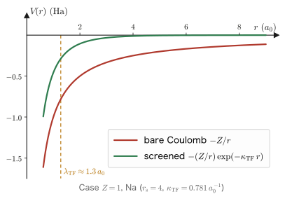
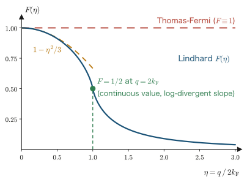
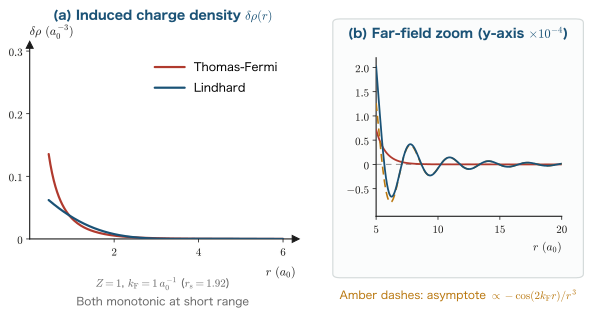
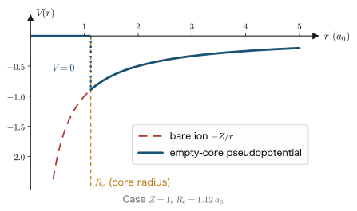
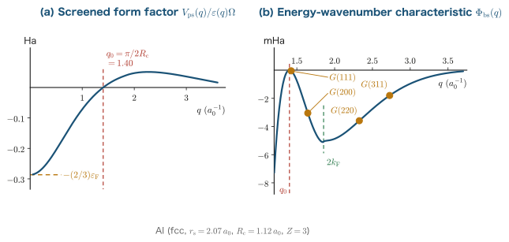
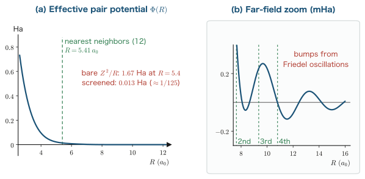

Chapter 8Linear Response and Screening
In Chapter 7 we obtained the ground-state energy of the homogeneous electron gas (jellium) by splitting it into the kinetic, exchange, and correlation energies. Real materials, however, are not uniform. A metal contains impurities, vacancies, and surfaces, and above all its ions (nuclei plus core electrons) are arranged periodically. All of these can be regarded as “perturbations” applied to a uniform sea of electrons. If the perturbation is weak, the response of the electron gas should be proportional to the first order of the perturbation—this is the idea of linear response. In this chapter we calculate, at two levels, how the surrounding electrons rearrange themselves to hide the charge when a point charge is embedded in a metal (screening). The first is a crude treatment obtained by linearizing the Thomas–Fermi approximation (Chapter 4), which gives an exponentially decaying Yukawa-type screened potential. The second is the Lindhard function, which carries out first-order perturbation theory without discarding the information about the Fermi sphere; it has a weak singularity at $q=2k_F$ and produces in real space a long-range oscillation $\cos(2k_F r)/r^3$ (Friedel oscillations). It is the latter that experiments support (the Knight shift in metal NMR, STM images, and the Kohn anomaly in phonon dispersion). At the end of the chapter, we combine this linear-response machinery with pseudopotentials and explain the equilibrium volume and crystal structure of sp valence metals such as Na, Mg, and Al from surprisingly few assumptions. Before turning to the exact density functional theory that begins in Chapter 9, we want to acquire the viewpoint of “connecting the change in the density with the change in the potential.”
- The definitions of the response function $\chi(q)$ and the dielectric function $\varepsilon(q)$, the derivation of the relation $\varepsilon(q)=1-(4\pi/q^2)\chi(q)$ that connects them, and the meaning of the RPA (random-phase approximation)
- Deriving $\chi_{\mathrm{TF}}=-D(\varepsilon_F)$ from the linearization of the Thomas–Fermi equation, and carrying out the inverse Fourier transform completely to obtain the Yukawa-type screened potential $-\left(Z/r\right)e^{-\kappa_{\mathrm{TF}}r}$ and the perfect-screening sum rule
- Why Knight-shift experiments refute the Thomas–Fermi picture, and what was missing
- Deriving the Lindhard function $\chi(q)=\chi_{\mathrm{TF}}F(\eta)$ from first-order perturbation theory, without omitting the angular and radial integrals
- How the logarithmic singularity at $q=2k_F$ originates from the geometry of the Fermi surface, and the mechanism by which it produces the real-space Friedel oscillations $\cos(2k_Fr)/r^3$
- Ashcroft's empty-core pseudopotential and the four-term decomposition of the total energy by second-order perturbation theory, the band-structure energy, and the choice of crystal structure
A note on the units of this chapter
In this chapter, too, we basically use the Hartree atomic units introduced in Chapter 1 ($\hbar=m_e=e=4\pi\varepsilon_0=1$). In these units the Coulomb interaction energy of two electrons is $1/r$, the kinetic energy operator is $-\tfrac{1}{2}\nabla^2$, and the energy of a free electron is $\varepsilon_k=k^2/2$. The unit of length is the Bohr radius $a_0=0.5292\,\text{Å}$, and the unit of energy is the hartree ($1\,\mathrm{Ha}=27.211\,\mathrm{eV}$).
In the literature on screening and pseudopotentials, however, Rydberg units (Ry) have historically been used often. The Ry system takes $\hbar^2/2m_e=1$ and $e^2=2$, so that the energy of a free electron takes the form $\varepsilon_k=k^2$ and the Coulomb interaction the form $2/r$. The conversion is
$$1\,\mathrm{Ha} = 2\,\mathrm{Ry} = 27.211\,\mathrm{eV}$$In this chapter we write the main energy results in both Ha and Ry. Lengths and wavenumbers (the screening length $\lambda_{\mathrm{TF}}$, the screening wavenumber $\kappa_{\mathrm{TF}}$, and the Fermi wavenumber $k_F$) are physical quantities that do not depend on the choice of the system of units, so there is no need to give them in both.
We also add, at key points, formulas written in Gaussian units with $e^2$ kept explicit. The rule for converting a formula in atomic units back to Gaussian units is simple: just supply one factor of $e^2$ wherever the Coulomb interaction appears. For example, $\kappa_{\mathrm{TF}}^2=4\pi D(\varepsilon_F)$ (atomic units) becomes $\kappa_{\mathrm{TF}}^2=4\pi e^2 D(\varepsilon_F)$ in Gaussian units.
8.1 Problem Setup: Dropping a Single Charge into a Metal
In this section we set up the problem of the whole chapter. We begin with a concrete thought experiment, then formulate what the framework called “linear response” means, and finally see how wide a range of condensed-matter physics this framework covers.
8.1.1 Thought experiment: an impurity charge in a metal
Suppose we gently place a point charge $+Z$ at the origin inside a homogeneous electron gas (density $\rho_0$). In vacuum, this point charge would create, at a distance $r$, the potential energy $-Z/r$ (for an electron). This is a very long-range interaction, decaying only as $1/r$.
Inside a metal, however, this does not happen, because electrons are attracted to the positive charge and gather around it. The electrons that gather are negatively charged, so seen from outside they cancel part of the point charge $+Z$. Seen from sufficiently far away, the positive charge and the negative charge of the electron cloud surrounding it cancel completely, and the charge becomes completely invisible—this is screening.
There are two questions to ask here.
- At what distance does the charge become hidden? What is the length scale over which screening acts (the screening length)?
- In what form does it become hidden? Does the potential decay monotonically, or does it behave in some other way?
As we will see later, the answer to the first question is “about $1\,\text{Å}$ in a metal, that is, shorter than the interatomic distance.” This is decisively important for understanding the properties of metals. Precisely because the charges of the ions in a metal screen one another so well, the conduction electrons behave as “nearly free electrons,” and the band structure of a simple metal is close to that of free electrons (Chapter 12). The second question is the main theme of this chapter, and its answer changes dramatically between the first half of the chapter (Thomas–Fermi) and the second half (Lindhard).
8.1.2 The framework of linear response
Strictly speaking, to find the electron density of a system in which a charge has been embedded, we would have to solve the Schrödinger equation of that system (or the Kohn–Sham equations of Chapter 10). That is generally difficult. When the perturbation is weak, however, the problem becomes dramatically simpler.
Definition: Linear response
When a weak external field $V_{\mathrm{ext}}$ is applied to a system and the change $\delta A$ of a physical quantity $A$ can be written to first order in $V_{\mathrm{ext}}$, this is called linear response. In general $\delta A$ is a functional of $V_{\mathrm{ext}}$, and its Taylor expansion gives
$$\delta A = \int \dd^3 r'\, K(\rr,\rr')\, V_{\mathrm{ext}}(\rr') + O(V_{\mathrm{ext}}^2)$$This first-order coefficient $K(\rr,\rr')$ is called the response function. Linear response theory is the theory that calculates this $K$ from information about the unperturbed system alone.
This is the key point of linear response. The response function is determined not by the perturbed system but only by the properties of the system before the perturbation (in our case, the homogeneous electron gas). The homogeneous electron gas has already been studied thoroughly in Chapters 3 and 7. Therefore, once $K$ has been calculated, the answer for any weak perturbation follows from “a single integral.”
Furthermore, the homogeneous electron gas has the powerful property of translational symmetry. If the unperturbed system is the same everywhere, the response function must be a function of the relative position of the two points only:
\begin{equation} K(\rr,\rr') = K(\rr-\rr') \label{eq:8-transl} \end{equation}An integral containing a function of the relative position only is a convolution, so after a Fourier transform it becomes a mere multiplication (the Math Note in Section 8.2.2). That is, the problem decomposes into independent problems for each wavenumber $\bm{q}$. This is why all the calculations in this chapter are carried out in $\bm{q}$ space.
8.1.3 The breadth of applications
The setting “placing a point charge in a metal” may look special, but the phenomena covered by the framework of linear response are extremely wide. Representative examples follow. In this chapter we can treat only the static (zero-frequency) part of them, but the way of thinking is common to all.
- Impurities, vacancies, and surfaces. Anything that breaks the uniformity of the host is a perturbation. The induced charge distribution (Friedel oscillations) is the main theme of Section 8.6 of this chapter.
- The Knight shift in metal NMR. The magnetic field felt by a nuclear spin is sensitive to the electron density through the contact interaction with the conduction electrons. How far the electron density is disturbed around an impurity appears directly in the shape of the resonance line (Section 8.4).
- Phonon anomalies (Kohn anomalies). The effective interaction between ions is screened by the electron gas. If the screening is singular at $q=2k_F$, the phonon dispersion also has a kink at $q=2k_F$ (Section 8.6.9).
- The RKKY interaction between magnetic impurities. A localized spin polarizes the conduction electrons, and this polarization is transmitted to another localized spin. The oscillating response function produces an exchange coupling that alternates between ferromagnetic and antiferromagnetic depending on the distance (Section 8.6.8).
- Stability of the crystal structure. If the weak pseudopotential created by the ions is regarded as a perturbation, the second-order perturbation-theory energy selects the crystal structure (Section 8.7).
- Dielectric and optical response. The response to an external electric field is the dielectric function, and its frequency dependence gives the refractive index and the absorption spectrum (Chapter 18).
- Convergence of numerical calculations. When the charge density is updated in a self-consistent field (SCF) calculation, the response function of the system effectively determines the “gain.” If the response diverges at long wavelengths, the iterations oscillate (charge sloshing in Chapter 14).
The structure common to all of these is the feedback “apply something from outside → the electrons respond → the response weakens (or deforms) the original external field.” In the next section we turn this feedback into equations.
8.2 The Response Function and the Dielectric Function
We now sort out the relations among four quantities—the external potential, the induced charge, the induced potential, and the total potential—define the response function $\chi(q)$ and the dielectric function $\varepsilon(q)$, and derive the relation that connects them. The conclusion of this section is the single Eq. \eqref{eq:8-eps-chi}, but the distinction made along the way, "the response to which potential?", is the place where beginners stumble most often, so we treat it carefully.
8.2.1 The four quantities and their relations
Let us define the cast of characters. We define all of them as the potential energy felt by a single electron (note that this is not the electrostatic potential $\phi$; since the charge of an electron is $-e=-1$, they are related by $V=-\phi$).
Definition: The four quantities
- $V_{\mathrm{ext}}(\rr)$: the external potential. The potential energy that charges brought in from outside (impurities, ions) exert on the electrons. It is the quantity we specify.
- $\delta\rho(\rr)$: the induced electron density. The change $\rho(\rr)-\rho_0$ in the electron number density produced by the perturbation.
- $\delta V(\rr)$: the induced potential. The electrostatic potential energy produced by the induced electron density $\delta\rho$ (the change in the Hartree term).
- $V(\rr)=V_{\mathrm{ext}}(\rr)+\delta V(\rr)$: the total potential. The potential energy that the electrons actually feel. It is also called the screened potential.
Here is the first key point. What determines how the electrons move is not $V_{\mathrm{ext}}$ but $V$. An electron cannot distinguish "charge that came from outside" from "fellow electrons that moved earlier." Therefore it is natural to define the response function $\chi$ as the response to the total potential $V$.
Definition: The response function and the dielectric function
By the translational symmetry of the homogeneous electron gas, for each Fourier component (from here on, the Fourier transform convention follows the Math Note in Section 8.2.2)
\begin{equation} \delta\rho(\bm{q}) = \chi(q)\, V(\bm{q}) \label{eq:8-chi-def} \end{equation}holds. This proportionality coefficient $\chi(q)$ is called the response function (or susceptibility). For an isotropic electron gas, $\chi$ does not depend on the direction of $\bm{q}$ but is a function only of the magnitude $q=|\bm{q}|$.
On the other hand, we define the ratio of the external potential to the total potential by
\begin{equation} V(\bm{q}) = \frac{V_{\mathrm{ext}}(\bm{q})}{\varepsilon(q)} \label{eq:8-eps-def} \end{equation}and call $\varepsilon(q)$ the dielectric function. If $\varepsilon(q)>1$, the external field is weakened (screened).
$\chi$ and $\varepsilon$ both describe the same physics seen from different angles, and the two are not independent. What connects them is the Poisson equation, which produces $\delta V$ from $\delta\rho$.
8.2.2 The Fourier transform of the Poisson equation
Math Note: The Fourier transform convention and the convolution theorem
In this chapter we use the three-dimensional Fourier transform with the following convention:
\begin{align} \tilde f(\bm{q}) &= \int \dd^3 r\; f(\rr)\, e^{-i\bm{q}\cdot\rr} \label{eq:8-ft}\\ f(\rr) &= \frac{1}{(2\pi)^3}\int \dd^3 q\; \tilde f(\bm{q})\, e^{+i\bm{q}\cdot\rr} \label{eq:8-ift} \end{align}That is, all the factors of $2\pi$ are placed on the inverse-transform side. From here on, when there is no risk of confusion, we drop the tilde of $\tilde f$ and write $f(\bm{q})$ (distinguishing by whether the argument is $\rr$ or $\bm{q}$).
(1) Differentiation becomes multiplication. When we differentiate Eq. \eqref{eq:8-ift} with respect to $\rr$, only the exponential is differentiated, giving $\nabla e^{i\bm{q}\cdot\rr}=i\bm{q}\,e^{i\bm{q}\cdot\rr}$, so $\nabla \to i\bm{q}$, and therefore
$$\nabla^2 f(\rr) \;\longleftrightarrow\; -q^2 \tilde f(\bm{q}).$$(2) Convolution becomes multiplication. Let $h(\rr)=\int\dd^3r'\, f(\rr-\rr')g(\rr')$. Then
\begin{align} \tilde h(\bm{q}) &= \int \dd^3 r\int \dd^3 r'\, f(\rr-\rr')g(\rr')e^{-i\bm{q}\cdot\rr} \notag\\ &= \int \dd^3 r\int \dd^3 r'\, f(\rr-\rr')g(\rr')\,e^{-i\bm{q}\cdot(\rr-\rr')}e^{-i\bm{q}\cdot\rr'} \notag\\ &= \int \dd^3 u\, f(\bm{u})e^{-i\bm{q}\cdot\bm{u}} \int \dd^3 r'\, g(\rr')e^{-i\bm{q}\cdot\rr'} = \tilde f(\bm{q})\,\tilde g(\bm{q}) \label{eq:8-conv} \end{align}In the second line we merely decomposed the exponent as $e^{-i\bm q\cdot\rr}=e^{-i\bm q\cdot(\rr-\rr')}e^{-i\bm q\cdot\rr'}$. In the third line we made the change of variables $\bm{u}=\rr-\rr'$ (if we fix $\rr'$ and let $\rr$ run over all space, $\bm{u}$ also runs over all space, and the Jacobian is 1). With this, the double integral has separated into a product of two independent integrals. Thanks to this convolution theorem, all the relations of linear response become algebraic equations for each $\bm q$.
(3) The Fourier transform of the Coulomb potential. Since we will use it many times later, we compute it here. As it stands, $1/r$ does not decay at large distances and the integral does not converge, so we insert a convergence factor $e^{-\alpha r}$ ($\alpha>0$) and take $\alpha\to0^+$ at the end (Yukawa-type regularization):
\begin{align} \int \dd^3 r\, \frac{e^{-\alpha r}}{r}e^{-i\bm{q}\cdot\rr} &= \int_0^\infty \!\! r^2\dd r \int_0^\pi \!\!\sin\theta\,\dd\theta \int_0^{2\pi}\!\!\dd\varphi\; \frac{e^{-\alpha r}}{r}\,e^{-iqr\cos\theta} \notag\\ &= 2\pi \int_0^\infty \!\! r\, e^{-\alpha r} \dd r \int_{-1}^{1}\dd u\; e^{-iqru} \label{eq:8-coul1}\\ &= 2\pi \int_0^\infty \!\! r\, e^{-\alpha r}\,\frac{2\sin(qr)}{qr}\,\dd r = \frac{4\pi}{q}\int_0^\infty e^{-\alpha r}\sin(qr)\,\dd r \label{eq:8-coul2}\\ &= \frac{4\pi}{q}\cdot\frac{q}{\alpha^2+q^2} \;\xrightarrow{\;\alpha\to0^+\;}\; \frac{4\pi}{q^2} \label{eq:8-coul3} \end{align}In Eq. \eqref{eq:8-coul1} we took polar coordinates with $\bm q$ as the polar axis, so that $\bm q\cdot\rr=qr\cos\theta$, carried out the $\varphi$ integral ($2\pi$), and substituted $u=\cos\theta$ (since $\dd u=-\sin\theta\,\dd\theta$, the integration limits are reversed and the sign is restored). In Eq. \eqref{eq:8-coul2} we used $\int_{-1}^1 e^{-iqru}\dd u = \left[\frac{e^{-iqru}}{-iqr}\right]_{-1}^{1}=\frac{e^{iqr}-e^{-iqr}}{iqr}=\frac{2\sin qr}{qr}$. The integral in Eq. \eqref{eq:8-coul3} follows from
$$\int_0^\infty e^{-\alpha r}\sin(qr)\dd r = \mathrm{Im}\int_0^\infty e^{-(\alpha-iq)r}\dd r = \mathrm{Im}\,\frac{1}{\alpha-iq}=\mathrm{Im}\,\frac{\alpha+iq}{\alpha^2+q^2}=\frac{q}{\alpha^2+q^2}$$. In conclusion,
\begin{equation} \frac{1}{r} \;\longleftrightarrow\; \frac{4\pi}{q^2} \label{eq:8-coulft} \end{equation}The divergence as $q\to0$ is a manifestation of the fact that the Coulomb force is a long-range force.
Now that the preparations are done, let us find the induced potential produced by the induced charge. When the electron density increases by $\delta\rho$, the charge density is $-\delta\rho$ (the charge of an electron is $-1$). The Poisson equation for the electrostatic potential $\phi$ is $\nabla^2\phi=-4\pi\rho_{\text{charge}}$, so
\begin{equation} \nabla^2 \delta\phi(\rr) = -4\pi\,\bigl(-\delta\rho(\rr)\bigr) = 4\pi\,\delta\rho(\rr). \label{eq:8-poisson1} \end{equation}The potential energy felt by an electron is $\delta V=(-1)\times\delta\phi=-\delta\phi$, so multiplying both sides by $-1$ gives
\begin{equation} \nabla^2 \delta V(\rr) = -4\pi\,\delta\rho(\rr). \label{eq:8-poisson2} \end{equation}Let us check the sign. At a place where $\delta\rho>0$ (electrons have gathered), the other electrons should want to avoid that place, so $\delta V>0$ must hold. Eq. \eqref{eq:8-poisson2} says that $\delta V$ is convex upward (a maximum) at a point where electrons have gathered, which is indeed consistent. Note also that Eq. \eqref{eq:8-poisson2} says the same thing as the statement that the interaction energy between electrons is $+1/|\rr-\rr'|$ (repulsion), that is,
\begin{equation} \delta V(\rr) = \int \dd^3 r'\, \frac{\delta\rho(\rr')}{|\rr-\rr'|} \label{eq:8-hartree} \end{equation}(if we apply $\nabla^2$ to Eq. \eqref{eq:8-hartree} and use $\nabla^2(1/|\rr-\rr'|)=-4\pi\delta(\rr-\rr')$, we obtain Eq. \eqref{eq:8-poisson2}). Let us Fourier transform both sides. The left side becomes $-q^2\delta V(\bm q)$ by rule (1) of the Math Note; alternatively, directly from the fact that Eq. \eqref{eq:8-hartree} is a convolution and from Eq. \eqref{eq:8-coulft}:
\begin{equation} \delta V(\bm{q}) = \frac{4\pi}{q^2}\,\delta\rho(\bm{q}). \label{eq:8-poissonq} \end{equation}With this, all four quantities are connected by algebraic relations for each $\bm q$.
8.2.3 The relation between $\varepsilon(q)$ and $\chi(q)$
At last we derive the goal of this section. Returning to the definition of the total potential, we substitute Eqs. \eqref{eq:8-poissonq} and \eqref{eq:8-chi-def} in turn.
\begin{align} V(\bm{q}) &= V_{\mathrm{ext}}(\bm{q}) + \delta V(\bm{q}) \label{eq:8-vtot1}\\ &= V_{\mathrm{ext}}(\bm{q}) + \frac{4\pi}{q^2}\,\delta\rho(\bm{q}) \label{eq:8-vtot2}\\ &= V_{\mathrm{ext}}(\bm{q}) + \frac{4\pi}{q^2}\,\chi(q)\,V(\bm{q}) \label{eq:8-vtot3} \end{align}In Eq. \eqref{eq:8-vtot2} we used the Poisson equation, Eq. \eqref{eq:8-poissonq}, and in Eq. \eqref{eq:8-vtot3} the definition of the response function, Eq. \eqref{eq:8-chi-def}. This is the moment at which the feedback of screening appears in the equations: $V(\bm q)$ itself appears on the right-hand side. Solving for $V(\bm q)$, we obtain
\begin{align} V(\bm{q})\left[1 - \frac{4\pi}{q^2}\chi(q)\right] &= V_{\mathrm{ext}}(\bm{q}) \label{eq:8-vsolve1}\\ V(\bm{q}) &= \frac{V_{\mathrm{ext}}(\bm{q})}{1-\dfrac{4\pi}{q^2}\chi(q)} \label{eq:8-vsolve2} \end{align}Comparing this with the definition of the dielectric function, Eq. \eqref{eq:8-eps-def}, we immediately obtain the conclusion.
What have we obtained? If we can compute the response function, the dielectric function is determined, and by Eq. \eqref{eq:8-eps-def} the screened potential is determined. All the remaining work is concentrated into a single point: "finding $\chi(q)$." Note also that $\chi<0$ (electrons gather, $\delta\rho>0$, where the attractive potential is $V<0$), so $\varepsilon>1$, and the external field is indeed weakened.
8.2.4 The RPA: neglecting the exchange-correlation response
Here we must state explicitly that an approximation has crept in. In Eq. \eqref{eq:8-vtot2}, as the "additional potential" produced by the induced density, we counted only the electrostatic Hartree term $\delta V=(4\pi/q^2)\delta\rho$. However, electrons also influence one another through exchange and correlation effects. In terms of the Kohn–Sham picture of Chapter 10, the effective potential is $V_{\mathrm{eff}}=V_{\mathrm{ext}}+V_H+V_{xc}$, and when the density changes, the exchange-correlation potential changes as well:
\begin{equation} \delta V_{xc}(\bm{q}) = f_{xc}(q)\,\delta\rho(\bm{q}), \qquad f_{xc}(q)\equiv \frac{\delta^2 E_{xc}}{\delta\rho\,\delta\rho}\bigg|_{\rho_0}\ \text{(Fourier component)} \label{eq:8-fxc} \end{equation}Definition: Random-phase approximation (RPA)
The approximation that counts only the Hartree term as the additional potential created by the induced density and ignores the exchange-correlation response $f_{xc}$ is called the random-phase approximation (RPA). When $f_{xc}$ is included, Eq. \eqref{eq:8-eps-chi} is replaced by
$$\varepsilon(q) = 1-\left[\frac{4\pi}{q^2}+f_{xc}(q)\right]\chi(q)$$Prescriptions that incorporate $f_{xc}$ approximately are collectively called local-field corrections.
The name RPA derives from the perturbation theory in the high-density limit in Chapter 7 (the argument that, when the sum is taken, the terms whose phases do not line up randomly vanish). From here on in this chapter we adopt the RPA. The main conclusions of this chapter, such as the screening length of simple metals and the $2k_F$ singularity, do not change qualitatively even when local-field corrections are included.
8.3 Thomas–Fermi Screening
We now compute the response function $\chi(q)$ at the first level of approximation, the Thomas–Fermi (TF) approximation. It is a very short calculation: we merely linearize the TF equation derived in Chapter 4 around the homogeneous electron gas. From the result we estimate the screening length, obtain the potential around a point charge completely by an inverse Fourier transform, and prove that the screening is “perfect.”
8.3.1 Linearization of the Thomas–Fermi equation
Recall the Thomas–Fermi Euler equation derived in Chapter 4. The sum of the functional derivative of the kinetic energy in the local density approximation and the external and Hartree potentials equals a constant (the chemical potential $\mu$) everywhere:
\begin{equation} \frac{1}{2}\left(3\pi^2\right)^{2/3}\rho(\rr)^{2/3} + V(\rr) = \mu \label{eq:8-tf-euler} \end{equation}Here $V$ is the total potential felt by an electron (external plus Hartree). The first term is none other than the Fermi energy of a homogeneous electron gas with the local density $\rho(\rr)$,
\begin{equation} \varepsilon_F(\rho) = \frac{k_F^2}{2}=\frac{1}{2}\left(3\pi^2\rho\right)^{2/3} \label{eq:8-eF} \end{equation}(with $k_F=(3\pi^2\rho)^{1/3}$ from Chapter 3). Therefore Eq. \eqref{eq:8-tf-euler} is the condition that “the local Fermi level (the local $\varepsilon_F$ plus the height $V$ of the bottom of the potential) is the same throughout the whole system,” which is precisely the condition of thermal and chemical equilibrium. Keeping this reading in mind makes the meaning of the linearization below easy to see.
Derivation: The TF response function
In the absence of a perturbation, $V=0$, $\rho=\rho_0$ (uniform), and $\mu=\varepsilon_F^0\equiv\frac{1}{2}(3\pi^2\rho_0)^{2/3}$. Suppose that a weak perturbation is applied and that
$$\rho(\rr)=\rho_0+\delta\rho(\rr), \qquad V(\rr)=0+\delta V(\rr)\equiv V(\rr)$$(since $V$ is itself the perturbation, it is a first-order small quantity). As long as the number of electrons is conserved, the chemical potential $\mu$ does not change, so it remains $\mu=\varepsilon_F^0$. We substitute this into Eq. \eqref{eq:8-tf-euler}:
\begin{align} \frac{1}{2}\left(3\pi^2\right)^{2/3}\left(\rho_0+\delta\rho\right)^{2/3} + V &= \varepsilon_F^0 \label{eq:8-lin1}\\ \frac{1}{2}\left(3\pi^2\right)^{2/3}\rho_0^{2/3}\left(1+\frac{\delta\rho}{\rho_0}\right)^{2/3} + V &= \varepsilon_F^0 \label{eq:8-lin2}\\ \varepsilon_F^0\left[1+\frac{2}{3}\frac{\delta\rho}{\rho_0}+O\!\left(\left(\tfrac{\delta\rho}{\rho_0}\right)^2\right)\right] + V &= \varepsilon_F^0 \label{eq:8-lin3} \end{align}In Eq. \eqref{eq:8-lin2} we factored out $\rho_0^{2/3}$, and in Eq. \eqref{eq:8-lin3} we used the binomial expansion $(1+x)^{2/3}=1+\tfrac{2}{3}x+O(x^2)$ (assuming $x=\delta\rho/\rho_0\ll1$; this is why the response is “linear”). The $\varepsilon_F^0$ cancels on both sides, and keeping only the first-order terms gives
\begin{align} \frac{2}{3}\,\frac{\varepsilon_F^0}{\rho_0}\,\delta\rho + V &= 0 \label{eq:8-lin4}\\ \delta\rho(\rr) &= -\frac{3\rho_0}{2\varepsilon_F^0}\,V(\rr) \label{eq:8-lin5} \end{align}The coefficient $3\rho_0/2\varepsilon_F^0$ should look familiar. It is the formula $D(\varepsilon_F)=3N/2\varepsilon_F$ of Chapter 3 divided by the volume $V_{\text{system}}$, that is, the density of states at the Fermi level per unit volume, including spin. In this chapter we write it as $D(\varepsilon_F)$:
\begin{equation} D(\varepsilon_F) \equiv \frac{3\rho_0}{2\varepsilon_F^0} = \frac{3\rho_0}{k_F^2} = \frac{3}{k_F^2}\cdot\frac{k_F^3}{3\pi^2} = \frac{k_F}{\pi^2} \label{eq:8-dos} \end{equation}Here we used $\rho_0=k_F^3/3\pi^2$ (Chapter 3). From the above, we obtain
\begin{equation} \delta\rho(\rr) = -D(\varepsilon_F)\,V(\rr) \quad\Longrightarrow\quad \chi_{\mathrm{TF}}(q) = -D(\varepsilon_F) = -\frac{k_F}{\pi^2} \label{eq:8-chi-tf} \end{equation}Note that $\chi_{\mathrm{TF}}$ is a constant independent of $q$. This single point will become a problem from Section 8.4 onward.
Physical Meaning: Why does the density of states appear?
Eq. \eqref{eq:8-chi-tf} can be read intuitively as follows. Suppose that the potential is lowered by $V$ at some point ($V<0$). Since the Fermi level $\mu$ is common to the whole system, at that point the width of the “states below the energy $\mu$” widens by $|V|$. The number of states (per unit volume) lying in the energy width $|V|$ is $D(\varepsilon_F)|V|$, and that many extra electrons are packed in. That is, $\delta\rho=D(\varepsilon_F)|V|=-D(\varepsilon_F)V$.
In other words, the strength of screening is determined by the density of states at the Fermi level. The larger $D(\varepsilon_F)$ is, the more easily a metal hides a charge by moving its electrons. Conversely, in an insulator, where $D(\varepsilon_F)=0$, screening by this mechanism does not occur (screening in an insulator arises from a different mechanism, a finite $\varepsilon$ due to electronic polarization, which merely weakens the long-range Coulomb law to $1/\varepsilon r$ and does not cut it off exponentially). This is another concrete example of the statement in Chapter 3 that “$D(\varepsilon_F)$ governs the properties of metals.”
8.3.2 The Thomas–Fermi dielectric function and the screening length
Simply substituting Eq. \eqref{eq:8-chi-tf} into Eq. \eqref{eq:8-eps-chi} gives the dielectric function:
\begin{align} \varepsilon_{\mathrm{TF}}(q) &= 1 - \frac{4\pi}{q^2}\bigl(-D(\varepsilon_F)\bigr) = 1 + \frac{4\pi D(\varepsilon_F)}{q^2} \label{eq:8-eps-tf1} \end{align}We therefore introduce a new wavenumber $\kappa_{\mathrm{TF}}$ by
\begin{equation} \kappa_{\mathrm{TF}}^2 \equiv 4\pi D(\varepsilon_F) \qquad\left(\text{Gaussian units: }\kappa_{\mathrm{TF}}^2=4\pi e^2 D(\varepsilon_F)\right) \label{eq:8-kappa-def} \end{equation}With this definition, the dielectric function and the response function take extremely simple forms.
\begin{equation} \varepsilon_{\mathrm{TF}}(q) = 1+\frac{\kappa_{\mathrm{TF}}^2}{q^2}, \qquad \chi_{\mathrm{TF}} = -\frac{\kappa_{\mathrm{TF}}^2}{4\pi} \label{eq:8-eps-tf} \end{equation}Let us write $\kappa_{\mathrm{TF}}$ in terms of the electron density. We substitute Eq. \eqref{eq:8-dos} into Eq. \eqref{eq:8-kappa-def} and use $k_F=(3\pi^2\rho_0)^{1/3}$:
\begin{align} \kappa_{\mathrm{TF}}^2 &= 4\pi\cdot\frac{k_F}{\pi^2} = \frac{4k_F}{\pi} \label{eq:8-kap1}\\ &= \frac{4}{\pi}\left(3\pi^2\rho_0\right)^{1/3} = \frac{4\cdot 3^{1/3}\pi^{2/3}}{\pi}\rho_0^{1/3} = 4\left(\frac{3\rho_0}{\pi}\right)^{1/3} \label{eq:8-kap2} \end{align}In the second equality of Eq. \eqref{eq:8-kap2} we split $(3\pi^2)^{1/3}=3^{1/3}\pi^{2/3}$, and in the third we used $\pi^{2/3}/\pi=\pi^{-1/3}$ to combine the factors as $3^{1/3}\pi^{-1/3}\rho_0^{1/3}=(3\rho_0/\pi)^{1/3}$. Taking the square root gives
\begin{equation} \kappa_{\mathrm{TF}} = 2\left(\frac{3\rho_0}{\pi}\right)^{1/6} \qquad\left(\text{Gaussian units: }\kappa_{\mathrm{TF}}=2\sqrt{\frac{1}{a_0}\left(\frac{3\rho_0}{\pi}\right)^{1/3}}\right) \label{eq:8-kap3} \end{equation}Rewriting in terms of the density parameter $r_s$ (the radius of the sphere per electron, $\rho_0=3/4\pi r_s^3$, Chapter 3), we have $k_F=(9\pi/4)^{1/3}/r_s=1.9192/r_s$, so
\begin{align} \kappa_{\mathrm{TF}}^2 &= \frac{4k_F}{\pi}=\frac{4}{\pi}\left(\frac{9\pi}{4}\right)^{1/3}\frac{1}{r_s} \label{eq:8-lam1}\\ \lambda_{\mathrm{TF}} \equiv \frac{1}{\kappa_{\mathrm{TF}}} &= \left[\frac{\pi}{4}\left(\frac{4}{9\pi}\right)^{1/3} r_s\right]^{1/2} = \left(\frac{\pi}{12}\right)^{1/3}\sqrt{r_s} \label{eq:8-lam2} \end{align}The last equality of Eq. \eqref{eq:8-lam2} can be verified by simplifying the contents of the brackets. Indeed,
$$\frac{\pi}{4}\left(\frac{4}{9\pi}\right)^{1/3} = \frac{\pi\cdot 4^{1/3}}{4\cdot 9^{1/3}\pi^{1/3}} = \frac{\pi^{2/3}}{4^{2/3}\cdot 9^{1/3}} = \left(\frac{\pi^2}{16\cdot 9}\right)^{1/3} = \left(\frac{\pi^2}{144}\right)^{1/3} = \left(\frac{\pi}{12}\right)^{2/3}$$and the $1/2$ power of this is $(\pi/12)^{1/3}$. Numerically, $(\pi/12)^{1/3}=0.6396$, so a convenient formula for the screening length is
$$\lambda_{\mathrm{TF}} = \frac{1}{\kappa_{\mathrm{TF}}} = \left(\frac{\pi}{12}\right)^{1/3}\sqrt{r_s}\;a_0 = 0.6396\,\sqrt{r_s}\;a_0 \qquad (r_s \text{ is in } a_0 \text{ units})$$Example: Numerical values of the screening length in metals
Let us evaluate $\lambda_{\mathrm{TF}}$ for several simple metals.
| Metal | $r_s$ ($a_0$) | $k_F$ ($a_0^{-1}$) | $\kappa_{\mathrm{TF}}$ ($a_0^{-1}$) | $\lambda_{\mathrm{TF}}$ ($a_0$) | $\lambda_{\mathrm{TF}}$ (Å) |
|---|---|---|---|---|---|
| Na | 3.93 | 0.488 | 0.789 | 1.27 | 0.67 |
| K | 4.86 | 0.395 | 0.709 | 1.41 | 0.75 |
| Mg | 2.66 | 0.721 | 0.958 | 1.04 | 0.55 |
| Al | 2.07 | 0.927 | 1.086 | 0.92 | 0.49 |
All of them are below $1\,\text{Å}$, far shorter than the interatomic distance ($2\text{–}4\,\text{Å}$). The charge in a metal is almost completely hidden before it reaches the nearest-neighbor atoms. In the discussion below, as a convenient round value we take Na to be represented by $r_s=4$ and use $\lambda_{\mathrm{TF}}\simeq1.3\,a_0$.
8.3.3 The screened potential around a point charge: the complete inverse Fourier transform
What we are going to do. When a point charge $+Z$ is placed at the origin, we find the screened total potential $V(\rr)$ in real space. The procedure has three steps: “Fourier transform the external potential → divide by $\varepsilon_{\mathrm{TF}}$ → inverse Fourier transform,” and we carry out the final inverse transform completely by the residue theorem.
First, the external potential. The potential energy that a point charge $+Z$ exerts on an electron (charge $-1$) is attractive, $V_{\mathrm{ext}}(\rr)=-Z/r$. From Eq. \eqref{eq:8-coulft},
\begin{equation} V_{\mathrm{ext}}(\bm{q}) = -\frac{4\pi Z}{q^2}. \label{eq:8-vext-q} \end{equation}We divide this by Eq. \eqref{eq:8-eps-def}:
\begin{align} V(\bm{q}) = \frac{V_{\mathrm{ext}}(\bm{q})}{\varepsilon_{\mathrm{TF}}(q)} = \frac{-4\pi Z/q^2}{1+\kappa_{\mathrm{TF}}^2/q^2} = \frac{-4\pi Z/q^2}{\dfrac{q^2+\kappa_{\mathrm{TF}}^2}{q^2}} = -\frac{4\pi Z}{q^2+\kappa_{\mathrm{TF}}^2} \label{eq:8-vq-tf} \end{align}We merely multiplied the numerator and the denominator by $q^2$. What has happened here is important: the divergence at $q\to0$ has disappeared. The long-range tail $4\pi/q^2$ of the bare Coulomb potential has been transformed by screening into the finite value $4\pi/(q^2+\kappa^2)$. That it does not diverge as $q\to0$ (that is, for infinitely long wavelengths, or infinitely far away) corresponds to the exponential decay in real space.
Math Note: The residue theorem and Jordan's lemma
We will use complex integration in the next inverse transform, so we collect the necessary tools here. Even a reader who has not yet studied complex analysis can proceed by accepting the following two facts.
(1) The residue theorem. If, inside a closed curve $C$ in the complex plane (counterclockwise), a function $f(z)$ is analytic except for a finite number of simple poles $z_1,\dots,z_n$, then
$$\oint_C f(z)\,\dd z = 2\pi i \sum_{j}\mathrm{Res}_{z=z_j} f(z), \qquad \mathrm{Res}_{z=z_j}f = \lim_{z\to z_j}(z-z_j)f(z)$$A simple pole is a point where $f(z)$ can be written as $f(z)=g(z)/(z-z_j)$ ($g$ is analytic at $z_j$ and $g(z_j)\neq0$).
(2) Jordan's lemma. Let $r>0$. If $|f(z)|\to0$ as $|z|\to\infty$ in the upper half-plane, then on the large semicircle $C_R$ ($|z|=R$, $R\to\infty$) in the upper half-plane,
$$\int_{C_R} f(z)\,e^{izr}\,\dd z \;\longrightarrow\; 0.$$Intuitive reason: in the upper half-plane, for $z=x+iy$ ($y>0$) we have $|e^{izr}|=e^{-yr}$, which is exponentially small in the region where the imaginary part is positive. Therefore, an integral containing $e^{izr}$ is customarily closed in the upper half-plane (in the lower half-plane for $e^{-izr}$).
The integral to be used. For $r>0$ and $\kappa>0$ we show that
\begin{equation} \int_0^\infty \frac{q\sin(qr)}{q^2+\kappa^2}\,\dd q = \frac{\pi}{2}e^{-\kappa r} \label{eq:8-sinint} \end{equation}The integrand is invariant under $q\to-q$ (an even function: both the numerator and the denominator are even), so we may extend the interval to $(-\infty,\infty)$ and multiply by $1/2$. Next we rewrite $\sin(qr)=\mathrm{Im}\,e^{iqr}$:
$$\int_0^\infty \frac{q\sin qr}{q^2+\kappa^2}\dd q = \frac{1}{2}\,\mathrm{Im}\int_{-\infty}^{\infty}\frac{q\,e^{iqr}}{q^2+\kappa^2}\dd q.$$Extending the integrand to the complex $q$ plane, there are two poles, at $q^2+\kappa^2=0$, that is, $q=\pm i\kappa$. Because of the factor $e^{iqr}$, we close the contour in the upper half-plane by Jordan's lemma. Only $q=+i\kappa$ is enclosed, and its residue is
$$\mathrm{Res}_{q=i\kappa}\frac{q\,e^{iqr}}{(q-i\kappa)(q+i\kappa)} = \frac{i\kappa\, e^{i(i\kappa)r}}{2i\kappa}=\frac{e^{-\kappa r}}{2}.$$Therefore $\displaystyle\int_{-\infty}^{\infty}=2\pi i\cdot\frac{e^{-\kappa r}}{2}=i\pi e^{-\kappa r}$, and taking half of its imaginary part gives $\frac{1}{2}\cdot\pi e^{-\kappa r}$, that is, Eq. \eqref{eq:8-sinint}.
Derivation: The Yukawa-type screened potential
Substitute \eqref{eq:8-vq-tf} into the inverse Fourier transform \eqref{eq:8-ift}. Taking $\rr$ as the polar axis of the polar coordinates ($\bm q\cdot\rr=qr\cos\theta$), we carry out the angular integration by the same procedure as in the Math Note of Section 8.2.2:
\begin{align} V(\rr) &= \frac{1}{(2\pi)^3}\int \dd^3 q\;\left(-\frac{4\pi Z}{q^2+\kappa_{\mathrm{TF}}^2}\right)e^{i\bm{q}\cdot\rr} \label{eq:8-inv1}\\ &= -\frac{4\pi Z}{(2\pi)^3}\int_0^\infty \!\! q^2\dd q\int_0^\pi\!\!\sin\theta\,\dd\theta\int_0^{2\pi}\!\!\dd\varphi\; \frac{e^{iqr\cos\theta}}{q^2+\kappa_{\mathrm{TF}}^2} \label{eq:8-inv2}\\ &= -\frac{4\pi Z\cdot 2\pi}{(2\pi)^3}\int_0^\infty \frac{q^2}{q^2+\kappa_{\mathrm{TF}}^2}\dd q \int_{-1}^{1}\dd u\; e^{iqru} \label{eq:8-inv3}\\ &= -\frac{8\pi^2 Z}{8\pi^3}\int_0^\infty \frac{q^2}{q^2+\kappa_{\mathrm{TF}}^2}\cdot\frac{2\sin(qr)}{qr}\,\dd q \label{eq:8-inv4}\\ &= -\frac{2Z}{\pi r}\int_0^\infty \frac{q\sin(qr)}{q^2+\kappa_{\mathrm{TF}}^2}\,\dd q \label{eq:8-inv5}\\ &= -\frac{2Z}{\pi r}\cdot\frac{\pi}{2}e^{-\kappa_{\mathrm{TF}}r} \label{eq:8-inv6} \end{align}Eq. \eqref{eq:8-inv2} is a rewriting in polar coordinates. In Eq. \eqref{eq:8-inv3} we carried out the $\varphi$ integral ($2\pi$) and made the substitution $u=\cos\theta$. In Eq. \eqref{eq:8-inv4} we substituted $\int_{-1}^1 e^{iqru}\dd u=2\sin(qr)/qr$ and used $(2\pi)^3=8\pi^3$. In Eq. \eqref{eq:8-inv5} we simplified $q^2/q\cdot 2/(8\pi^3)\times 8\pi^2$ ($8\pi^2 Z\cdot 2/(8\pi^3 r)=2Z/\pi r$). In Eq. \eqref{eq:8-inv6} we used the result \eqref{eq:8-sinint} of the Math Note. Simplifying, we obtain
\begin{equation} V(r) = -\frac{Z}{r}\,e^{-\kappa_{\mathrm{TF}} r} \label{eq:8-yukawa} \end{equation}.
What have we obtained? The bare Coulomb potential $-Z/r$ has been cut off by the exponential factor $e^{-\kappa_{\mathrm{TF}}r}$ at the screening length $\lambda_{\mathrm{TF}}=1/\kappa_{\mathrm{TF}}$. This form is the same as the Yukawa potential (the form that appears in the meson-exchange model of the nuclear force), and it is also called the screened Coulomb potential. Considering how short $\lambda_{\mathrm{TF}}\simeq 1\,a_0$ is, the influence of a point charge in a metal reaches only about as far as the nearest-neighbor atoms.

8.3.4 Induced charge density and perfect screening
What we will do next. Now that the screened potential is known, we find the distribution $\delta\rho(r)$ of the electrons that actually gather, and prove that their total amount is exactly $Z$ (perfect screening).
The TF response function was a constant independent of $q$, so the proportionality $\delta\rho(\rr)=\chi_{\mathrm{TF}}V(\rr)$ holds as it is in real space as well. Using Eqs. \eqref{eq:8-eps-tf} and \eqref{eq:8-yukawa}, we have
\begin{align} \delta\rho(r) &= \chi_{\mathrm{TF}}\,V(r) = \left(-\frac{\kappa_{\mathrm{TF}}^2}{4\pi}\right)\left(-\frac{Z}{r}e^{-\kappa_{\mathrm{TF}}r}\right) \label{eq:8-drho1}\\ &= \frac{Z\kappa_{\mathrm{TF}}^2}{4\pi}\,\frac{e^{-\kappa_{\mathrm{TF}}r}}{r} \label{eq:8-drho-tf} \end{align}The sign is correct: extra electrons gather around the positive charge ($\delta\rho>0$).
Theorem: The perfect-screening sum rule
The total charge carried by the induced electrons exactly cancels the embedded point charge:
\begin{equation} Q \equiv \int \dd^3 r\; \delta\rho(\rr) = Z \label{eq:8-perfect} \end{equation}Proof: The perfect-screening sum rule
(a) Direct calculation in the TF case. Integrate Eq. \eqref{eq:8-drho-tf} over all space. Since $\delta\rho$ is spherically symmetric, $\dd^3r=4\pi r^2\dd r$:
\begin{align} Q &= \int_0^\infty 4\pi r^2\,\frac{Z\kappa_{\mathrm{TF}}^2}{4\pi}\frac{e^{-\kappa_{\mathrm{TF}}r}}{r}\,\dd r \label{eq:8-pf1}\\ &= Z\kappa_{\mathrm{TF}}^2\int_0^\infty r\,e^{-\kappa_{\mathrm{TF}}r}\,\dd r \label{eq:8-pf2}\\ &= Z\kappa_{\mathrm{TF}}^2\cdot\frac{1}{\kappa_{\mathrm{TF}}^2} = Z \label{eq:8-pf3} \end{align}From Eq. \eqref{eq:8-pf1} to Eq. \eqref{eq:8-pf2} we cancelled $4\pi r^2\cdot\frac{1}{4\pi r}=r$. In Eq. \eqref{eq:8-pf3} we used the formula $\int_0^\infty r e^{-ar}\dd r=1/a^2$ (integrating by parts once: $\int_0^\infty re^{-ar}\dd r=\left[-\frac{r}{a}e^{-ar}\right]_0^\infty+\frac{1}{a}\int_0^\infty e^{-ar}\dd r=0+\frac{1}{a^2}$. The boundary term is $0$ at $r\to\infty$ because the exponential wins, and also $0$ at $r=0$ because of the factor $r$).
(b) The general case (from the $q\to0$ limit). In fact this result is not specific to TF. Letting $\bm q\to0$ in the definition \eqref{eq:8-ft} of the Fourier transform, we have $e^{-i\bm q\cdot\rr}\to1$, so
$$Q = \int\dd^3 r\,\delta\rho(\rr) = \lim_{q\to0}\delta\rho(\bm{q}).$$On the other hand, $\delta\rho(\bm q)=\chi(q)V(\bm q)=\chi(q)V_{\mathrm{ext}}(\bm q)/\varepsilon(q)$. Substituting $\chi=\frac{q^2}{4\pi}(1-\varepsilon)$ from Eq. \eqref{eq:8-eps-chi}, we obtain
\begin{equation} \delta\rho(\bm{q}) = \frac{q^2}{4\pi}\frac{1-\varepsilon(q)}{\varepsilon(q)}\cdot\left(-\frac{4\pi Z}{q^2}\right) = Z\left(1-\frac{1}{\varepsilon(q)}\right) \label{eq:8-drho-gen} \end{equation}The factors $q^2$ and $4\pi$ cancel neatly. Therefore
$$Q = Z\lim_{q\to0}\left(1-\frac{1}{\varepsilon(q)}\right) = Z$$The last equality used $\varepsilon(q)\to\infty$ ($q\to0$). For TF, $\varepsilon_{\mathrm{TF}}=1+\kappa^2/q^2\to\infty$, and for the Lindhard dielectric function seen later as well, $\varepsilon\to1+\kappa^2/q^2$, so the same holds. The divergence of the dielectric function at $q\to0$ in a metal—this is the essence of perfect screening, and the decisive difference from an insulator, in which $\varepsilon$ remains finite. ∎
Note that Eq. \eqref{eq:8-drho-gen} is an important relation that we will use repeatedly in the following sections. Returning to real space, we have
\begin{equation} \delta\rho(\rr) = \frac{Z}{(2\pi)^3}\int \dd^3 q\left(1-\frac{1}{\varepsilon(q)}\right)e^{i\bm{q}\cdot\rr} \label{eq:8-drho-int} \end{equation}. Once the dielectric function is known, the induced charge distribution is determined by this single integral.
Physical Meaning: The claims of the Thomas–Fermi picture
To summarize the conclusions of this section, TF theory claims the following.
- A point charge in a metal is completely screened over a length $\lambda_{\mathrm{TF}}\sim1\,a_0$, a length shorter than the interatomic distance.
- The induced charge distribution has the monotonically decreasing form $e^{-\kappa r}/r$, and its sign does not change.
- Therefore, at a distance of $2\text{–}3$ atoms from the impurity, an atom there does not feel the presence of the impurity at all.
The third claim can be tested experimentally. We do so in the next section and see that TF breaks down.
8.4 Experimental Refutation: The Knight Shift in Metal NMR
The value of a theory is decided only by confronting it with experiment. In this section we see that an experiment in a seemingly distant field, the nuclear magnetic resonance (NMR) of metals, flatly contradicts the Thomas–Fermi picture of the previous section. We first explain the phenomenon called the Knight shift, then clarify what it measures about screening, and finally compare the experimental results for dilute alloys with the predictions of TF.
8.4.1 What is the Knight shift?
In nuclear magnetic resonance, a nucleus with spin $I$ is placed in a static magnetic field $H_0$, and transitions between the Zeeman-split nuclear spin levels are observed with electromagnetic waves. The resonance frequency is given by
\begin{equation} \omega = \gamma_n H_{\text{at nucleus}} \label{eq:8-nmr} \end{equation}($\gamma_n$ is the nuclear gyromagnetic ratio). The essential point here is that what the nucleus feels is not the external field $H_0$ itself but the effective magnetic field at its position.
In a metal, conduction electrons have a finite probability of being found at the nucleus (in particular, a wave function of $s$ character has no nodes at the nucleus). The external field $H_0$ slightly polarizes the conduction-electron spins through Pauli paramagnetism, and these polarized electron spins create an additional magnetic field at the nucleus. Among the interactions between electron and nuclear spins, the one that acts at the nucleus is the Fermi contact interaction
\begin{equation} \hat{H}_{\text{contact}} = \frac{8\pi}{3}\,\gamma_e\gamma_n\hbar^2\, \hat{\bm{I}}\cdot\hat{\bm{S}}\;\delta(\rr_e-\rr_n) \label{eq:8-contact} \end{equation}As the delta function shows, it acts only when the electron is at the nucleus. Therefore the shift of the effective magnetic field felt by the nucleus is proportional to the product of the probability $|\psi(0)|^2$ of finding an electron near the Fermi level at the nucleus and the spin susceptibility $\chi_P$:
\begin{equation} K \equiv \frac{\Delta\omega}{\omega} \propto \left\langle |\psi_{\kk}(\bm{0})|^2 \right\rangle_{\varepsilon_F}\,\chi_P \label{eq:8-knight} \end{equation}This relative shift $K$ of the resonance frequency is called the Knight shift. Even for the same nuclide, the resonance frequency in a metal differs by about $0.1\text{–}1\,\%$ from that in an insulating compound. This difference is direct evidence for the presence of conduction electrons.
Physical Meaning: What is the Knight shift a “yardstick” for?
What is essential in Eq. \eqref{eq:8-knight} is that $K$ is sensitive to the state of the conduction electrons at the nucleus. Therefore, if the electron density or the electronic states around a given nucleus differ from those in the host metal, the Knight shift of that nucleus takes a different value from the others.
Here is a blueprint for an experiment that measures screening. Dissolve a small amount of impurity in a metal and look at the NMR line of the host nuclei. Nuclei within the range of the impurity's influence have shifted Knight shifts, while nuclei outside that range remain unchanged. The shape of the line (a single sharp line or a broad distribution) tells us how far the perturbation reaches. The Knight shift is thus a “yardstick of screening” with atomic-scale resolution.
8.4.2 The prediction of the Thomas–Fermi picture
Let us pin down, with concrete numbers, what TF theory predicts for this experiment. Take silver (Ag, fcc, lattice constant $a=4.086\,\text{Å}=7.72\,a_0$) as the host. Since Ag has one valence electron per atom, the volume per atom is $a^3/4=115.1\,a_0^3$, and the density parameter is
\begin{equation} r_s = \left(\frac{3\times115.1}{4\pi}\right)^{1/3} = 3.02\,a_0 \label{eq:8-ag-rs} \end{equation}Therefore, from Eq. \eqref{eq:8-lam2},
$$\lambda_{\mathrm{TF}}^{\mathrm{Ag}} = 0.6396\sqrt{3.02} = 1.11\,a_0 = 0.59\,\text{Å}.$$On the other hand, the nearest-neighbor distance in fcc is $a/\sqrt{2}=5.46\,a_0$, the second-neighbor distance is $a=7.72\,a_0$, and the third-neighbor distance is $a\sqrt{3/2}=9.46\,a_0$. Evaluating the exponential factor contained in the TF screened potential \eqref{eq:8-yukawa} gives
| Neighbor shell | Distance $R$ ($a_0$) | Coordination number | $e^{-R/\lambda_{\mathrm{TF}}}$ |
|---|---|---|---|
| 1st | 5.46 | 12 | $7.4\times10^{-3}$ |
| 2nd | 7.72 | 6 | $9.7\times10^{-4}$ |
| 3rd | 9.46 | 24 | $2.0\times10^{-4}$ |
| 4th | 10.92 | 12 | $5.5\times10^{-5}$ |
According to the TF picture, even the nearest-neighbor Ag nuclei feel less than $1\%$ of the impurity potential. From the second neighbors outward the effect is practically zero. The TF prediction is therefore clear:
Prediction of the TF picture
The NMR spectrum of the host nuclei of a dilute alloy (impurity concentration $c\ll1$) is as follows.
- The great majority of nuclei (a fraction of about $1-13c$) are not affected by the impurity at all, and give a single sharp line at the same position as in the pure metal;
- Only the few nuclei that are nearest neighbors of an impurity may produce a weak satellite line, shifted very slightly;
- Therefore the width of the main line hardly changes when impurities are added.
8.4.3 Experimental results and conclusion
The results of the experiment actually performed (the resonance of $^{107}$Ag and $^{109}$Ag in Ag alloys containing dilute Cd) differ markedly from this. Merely adding a few atomic percent of Cd causes the following.
- The resonance line broadens greatly, and the linewidth increases roughly in proportion to the impurity concentration;
- The center position of the line (the average Knight shift) also shifts systematically;
- Working backward from the size of the broadening, even nuclei ten or more neighbor shells away from the impurity suffer a measurable perturbation.
That is, the influence of the impurity reaches not merely $0.6\,\text{Å}$ but beyond $10\,\text{Å}$. The screening of the Thomas–Fermi model is inconsistent with experiment.
8.4.4 What went wrong with TF?
The cause of the failure is in fact stated clearly in the conclusion of Section 8.3.1. The TF response function was
$$\chi_{\mathrm{TF}}(q) = -D(\varepsilon_F) = \text{constant}$$It is independent of $q$, and this is the fatal flaw. The reason can be explained from two angles.
(i) The real-space view. That $\chi$ is a constant independent of $q$ means, in real space, the purely point-by-point (local) relation
$$\delta\rho(\rr) = \chi_{\mathrm{TF}} V(\rr)$$In general the response is nonlocal and has the form $\delta\rho(\rr)=\int\dd^3r'\,\chi(\rr-\rr')V(\rr')$. For $\chi(q)=$ constant, its Fourier transform is $\chi(\rr-\rr')\propto\delta(\rr-\rr')$, that is, the extreme assumption that the density change at a point is determined only by the potential at that point. But electrons are waves, and they move with a spatial extent of about the Fermi wavelength $2\pi/k_F\sim10\,a_0$. TF discards this wave nature completely.
(ii) The wavenumber-space view (this is the essential one). Looking back at the TF derivation \eqref{eq:8-lin1}–\eqref{eq:8-lin5}, only “the density of states at the Fermi level” appears there. The information on where the Fermi surface lies, that is, that a special wavenumber $k_F$ exists, has disappeared cleanly from the response function. In a metal, $k_F$ is special because the occupation number $f_\kk$ jumps discontinuously from $1$ to $0$ there. This “sharpness of the Fermi surface” can appear in the response function only as a $q$ dependence. Since TF treats the electron gas as a vague fluid, this sharpness is not built in from the start.
To do it correctly, there is no choice but to carry out perturbation theory honestly on the electron wave functions and count the transitions between occupied and unoccupied states. This is the Lindhard function of the next section.
8.5 Derivation of the Lindhard Function
What we will do. We add to the homogeneous electron gas a weak periodic potential of a single wavenumber $\bm q$, find the change in the wave functions by first-order perturbation theory, and from it compute the first-order change in the electron density, which gives the response function $\chi(q)$. The resulting sum can be converted into an integral over $k$ space and carried out completely, which yields a closed analytic form. Finally we examine the limits $q\to0$ and $q\to2k_F$ in detail. This section is the technical center of the chapter.
8.5.1 Setting up the perturbation and first-order perturbation theory
The unperturbed system is a free-electron gas in a box (volume $\Omega_{\text{sys}}$, periodic boundary conditions). The one-electron eigenstates are the plane waves
\begin{equation} \psi_{\kk}(\rr) = \frac{1}{\sqrt{\Omega_{\text{sys}}}}\,e^{i\kk\cdot\rr}, \qquad \varepsilon_{\kk} = \frac{k^2}{2} \label{eq:8-planewave} \end{equation}and the occupation numbers at $T=0$ are $f_\kk=\theta(k_F-k)$ (1 if occupied, 0 if empty). To this we add a real potential of a single wavenumber:
\begin{equation} \delta V(\rr) = V_q\,e^{i\bm{q}\cdot\rr} + V_q^{*}\,e^{-i\bm{q}\cdot\rr} \label{eq:8-pert} \end{equation}We use a sum of two terms in order to guarantee that $\delta V$ is real ($z+z^*=2\,\mathrm{Re}\,z$ is real). Since any perturbation can be written as a superposition of such single-wavenumber components, this loses no generality.
Math Note: Review of first-order perturbation theory
Let the eigenstates of the unperturbed Hamiltonian $\hat{H}_0$ be $|n\rangle$ and the eigenvalues $E_n$ ($\hat{H}_0|n\rangle=E_n|n\rangle$, $\langle n|m\rangle=\delta_{nm}$). Expand the eigenstate in the presence of the perturbation $\hat{W}$ as $|\tilde n\rangle=|n\rangle+|n^{(1)}\rangle+\cdots$, put $|n^{(1)}\rangle=\sum_{m\ne n}c_m|m\rangle$, and extract the first-order terms of the Schrödinger equation:
$$(\hat{H}_0-E_n)|n^{(1)}\rangle = -(\hat{W}-E_n^{(1)})|n\rangle .$$Multiplying from the left by $\langle m|$ ($m\ne n$), the left-hand side becomes $(E_m-E_n)c_m$ and the right-hand side becomes $-\langle m|\hat{W}|n\rangle$, so
\begin{equation} |\tilde n\rangle = |n\rangle + \sum_{m\ne n}\frac{\langle m|\hat{W}|n\rangle}{E_n-E_m}\,|m\rangle + O(W^2) \label{eq:8-pt1} \end{equation}Note that the denominator is $E_n-E_m$ (the energy of the initial state minus the energy of the intermediate state). If there is a degenerate ($E_m=E_n$) intermediate state, this formula cannot be used. This point becomes an issue in this section as well, so we treat it again in Section 8.5.3.
Let us compute the matrix elements. Between plane-wave states,
\begin{align} \langle \kk' |\delta V|\kk\rangle &= \frac{1}{\Omega_{\text{sys}}}\int \dd^3 r\; e^{-i\kk'\cdot\rr} \left(V_q e^{i\bm{q}\cdot\rr}+V_q^{*}e^{-i\bm{q}\cdot\rr}\right)e^{i\kk\cdot\rr} \label{eq:8-me1}\\ &= \frac{V_q}{\Omega_{\text{sys}}}\int \dd^3 r\; e^{i(\kk+\bm{q}-\kk')\cdot\rr} + \frac{V_q^{*}}{\Omega_{\text{sys}}}\int \dd^3 r\; e^{i(\kk-\bm{q}-\kk')\cdot\rr} \label{eq:8-me2}\\ &= V_q\,\delta_{\kk',\,\kk+\bm{q}} + V_q^{*}\,\delta_{\kk',\,\kk-\bm{q}} \label{eq:8-me3} \end{align}In Eq. \eqref{eq:8-me3} we used the orthogonality of plane waves under periodic boundary conditions, $\frac{1}{\Omega_{\text{sys}}}\int\dd^3r\,e^{i\bm{G}\cdot\rr}=\delta_{\bm{G},\bm{0}}$. A periodic potential causes only transitions that change the wavenumber by $\pm\bm q$—this is the greatest advantage of using a single-wavenumber perturbation. Therefore only two terms remain in the sum of Eq. \eqref{eq:8-pt1}:
\begin{equation} \tilde\psi_{\kk}(\rr) = \frac{1}{\sqrt{\Omega_{\text{sys}}}} \left[ e^{i\kk\cdot\rr} + A_{\kk}\,e^{i(\kk+\bm{q})\cdot\rr} + B_{\kk}\,e^{i(\kk-\bm{q})\cdot\rr} \right], \label{eq:8-psi1} \end{equation} \begin{equation} A_{\kk} = \frac{V_q}{\varepsilon_{\kk}-\varepsilon_{\kk+\bm{q}}}, \qquad B_{\kk} = \frac{V_q^{*}}{\varepsilon_{\kk}-\varepsilon_{\kk-\bm{q}}} \label{eq:8-AB} \end{equation}8.5.2 First-order change in the electron density
What we will do. We construct the electron density from the perturbed wave functions and pick out the terms of first order in $V_q$.
The electron density is the sum of the probability densities of the occupied states (including the spin degeneracy of 2):
\begin{equation} \rho(\rr) = 2\sum_{\kk} f_{\kk}\,\bigl|\tilde\psi_{\kk}(\rr)\bigr|^2 \label{eq:8-rho-sum} \end{equation}One remark is in order here. The perturbation can also change the occupation numbers $f_\kk$ themselves, but that change is of order $|V_q|^2$ (to first order the energy of a state does not change, since $\langle\kk|\delta V|\kk\rangle=0$), and so does not affect the first-order term we want. Therefore $f_\kk$ may be left unperturbed.
We expand the squared absolute value of Eq. \eqref{eq:8-psi1} to first order:
\begin{align} \bigl|\tilde\psi_{\kk}\bigr|^2 &= \frac{1}{\Omega_{\text{sys}}} \Bigl|e^{i\kk\cdot\rr}+A_{\kk}e^{i(\kk+\bm{q})\cdot\rr}+B_{\kk}e^{i(\kk-\bm{q})\cdot\rr}\Bigr|^2 \label{eq:8-abs1}\\ &= \frac{1}{\Omega_{\text{sys}}}\Bigl[ 1 + A_{\kk}e^{i\bm{q}\cdot\rr} + A_{\kk}^{*}e^{-i\bm{q}\cdot\rr} + B_{\kk}e^{-i\bm{q}\cdot\rr} + B_{\kk}^{*}e^{i\bm{q}\cdot\rr} \Bigr] + O(V_q^2) \label{eq:8-abs2} \end{align}Let us explain Eq. \eqref{eq:8-abs2} carefully. Expanding $|X|^2=XX^*$ gives nine terms, but the terms containing two factors taken from $A,B$ are of second order and are dropped. What remains are “first term × first term$^*$” $=1$, “first term × second term$^*$” $=A_\kk^* e^{i\kk\cdot\rr}e^{-i(\kk+\bm q)\cdot\rr}=A_\kk^*e^{-i\bm q\cdot\rr}$, “second term × first term$^*$” $=A_\kk e^{i\bm q\cdot\rr}$, and the two analogous terms for $B$.
Collecting the coefficient of $e^{i\bm q\cdot\rr}$ gives $A_\kk+B_\kk^*$. Since the energies are real, Eq. \eqref{eq:8-AB} gives
\begin{equation} A_{\kk}+B_{\kk}^{*} = \frac{V_q}{\varepsilon_{\kk}-\varepsilon_{\kk+\bm{q}}} + \frac{V_q}{\varepsilon_{\kk}-\varepsilon_{\kk-\bm{q}}} \label{eq:8-AB2} \end{equation}(taking $B_\kk^*$ turns $V_q^*$ back into $V_q$). Therefore the first-order change in the density is
\begin{align} \delta\rho(\rr) &= \frac{2}{\Omega_{\text{sys}}}\sum_{\kk} f_{\kk} \left[\frac{V_q}{\varepsilon_{\kk}-\varepsilon_{\kk+\bm{q}}} +\frac{V_q}{\varepsilon_{\kk}-\varepsilon_{\kk-\bm{q}}}\right]e^{i\bm{q}\cdot\rr} + \text{c.c.} \label{eq:8-drho-a} \end{align}(“c.c.” denotes the complex conjugate. The coefficient of $e^{-i\bm q\cdot\rr}$ is exactly the complex conjugate of the coefficient of $e^{+i\bm q\cdot\rr}$, so their sum is real. It is thereby guaranteed that the density is real.)
8.5.3 Symmetrization by relabeling indices
What we will do. We combine the two terms of Eq. \eqref{eq:8-drho-a} into one by replacing the summation variable.
Focus on the second term and relabel the summation variable as $\kk\to\kk+\bm{q}$ (the sum runs over all of $\kk$ space, so shifting the origin does not change the value of the sum). Then $f_\kk\to f_{\kk+\bm q}$, $\varepsilon_\kk\to\varepsilon_{\kk+\bm q}$, and $\varepsilon_{\kk-\bm q}\to\varepsilon_{\kk}$, so
\begin{align} \sum_{\kk}\frac{f_{\kk}}{\varepsilon_{\kk}-\varepsilon_{\kk-\bm{q}}} &= \sum_{\kk}\frac{f_{\kk+\bm{q}}}{\varepsilon_{\kk+\bm{q}}-\varepsilon_{\kk}} = -\sum_{\kk}\frac{f_{\kk+\bm{q}}}{\varepsilon_{\kk}-\varepsilon_{\kk+\bm{q}}} \label{eq:8-shift} \end{align}In the last step we reversed the sign of the denominator and pulled out an overall factor $-1$. Substituting this back into Eq. \eqref{eq:8-drho-a}, the two terms combine into a form with a common denominator:
\begin{equation} \delta\rho(\rr) = \left[\frac{2}{\Omega_{\text{sys}}}\sum_{\kk} \frac{f_{\kk}-f_{\kk+\bm{q}}}{\varepsilon_{\kk}-\varepsilon_{\kk+\bm{q}}}\right] V_q\,e^{i\bm{q}\cdot\rr} + \text{c.c.} \label{eq:8-drho-b} \end{equation}The amplitude of the $e^{i\bm q\cdot\rr}$ component of the perturbation Eq. \eqref{eq:8-pert} is $V_q$, and the amplitude of the same component of the density response is the square-bracketed quantity $\times V_q$. Comparing with the definition Eq. \eqref{eq:8-chi-def}, the quantity in square brackets is itself the response function.
\begin{equation} \chi(q) = \frac{2}{\Omega_{\text{sys}}}\sum_{\kk} \frac{f_{\kk}-f_{\kk+\bm{q}}}{\varepsilon_{\kk}-\varepsilon_{\kk+\bm{q}}} = \frac{4}{\Omega_{\text{sys}}}\sum_{\kk} \frac{f_{\kk}-f_{\kk+\bm{q}}}{k^2-\abs{\kk+\bm{q}}^2} \label{eq:8-lindhard-sum} \end{equation}The second expression is obtained by substituting $\varepsilon_\kk=k^2/2$ and moving the $1/2$ in the denominator up to the numerator (in Rydberg units $\varepsilon_k=k^2$, so the factor 2 does not appear and $\chi=(2/\Omega)\sum_\kk(f_\kk-f_{\kk+\bm q})/(k^2-|\kk+\bm q|^2)$. This is why the coefficient can look different in the literature).
Math Note: The apparent divergence due to degeneracy is not real
The perturbation-theory formula Eq. \eqref{eq:8-pt1} breaks down when $\varepsilon_\kk=\varepsilon_{\kk+\bm q}$. This occurs on the plane that satisfies $|\kk|=|\kk+\bm q|$, that is, $2\kk\cdot\bm q+q^2=0$. However, looking at the symmetrized final form Eq. \eqref{eq:8-lindhard-sum}, we see that on that plane the numerator also vanishes at the same time. This is because two states with equal energies have the same occupation number ($f$ is a function of $\varepsilon$ alone). Indeed, in the limit $\varepsilon_{\kk+\bm q}\to\varepsilon_\kk$,
$$\frac{f_{\kk}-f_{\kk+\bm{q}}}{\varepsilon_{\kk}-\varepsilon_{\kk+\bm{q}}} \;\longrightarrow\; \frac{\partial f}{\partial\varepsilon}\bigg|_{\varepsilon_\kk}$$which converges to a finite value (at absolute zero, a delta function on the Fermi surface; within the three-dimensional $\kk$ integral this is a contribution from a set of zero area, so it causes no problem). That is, there is no physical divergence.
In the calculation of the next section, however, we split the sum in two and evaluate each part separately. If we look at only one of them, a genuine pole $1/(2\kk\cdot\bm q+q^2)$ appears. This is an apparent singularity produced by the splitting, and the correct prescription is to take the Cauchy principal value (exclude a symmetric interval $\pm\epsilon$ around the pole and let $\epsilon\to0$). Indeed, near the pole the integrand has the form of an odd function $\propto1/(u-u_0)$, and if the principal value is taken, the contributions from the two sides of the pole cancel and the result is finite. The absolute value attached to the argument of the logarithm in the calculation below is a consequence of this principal-value prescription.
8.5.4 Converting the sum to an integral and carrying it out completely
What we will do. We convert the sum over $\kk$ in Eq. \eqref{eq:8-lindhard-sum} into an integral and carry out the angular and radial integrations in turn to obtain a closed form.
Derivation: Closed form of the Lindhard function
Step 1: Split the sum in two.
\begin{align} \chi(q) &= \frac{2}{\Omega_{\text{sys}}}\left[ \underbrace{\sum_{\kk}\frac{f_{\kk}}{\varepsilon_{\kk}-\varepsilon_{\kk+\bm{q}}}}_{\textstyle S_1} \;-\; \underbrace{\sum_{\kk}\frac{f_{\kk+\bm{q}}}{\varepsilon_{\kk}-\varepsilon_{\kk+\bm{q}}}}_{\textstyle S_2'} \right] \label{eq:8-split} \end{align}Step 2: Relabel the variable in $S_2'$. Putting $\kk\to\kk-\bm q$ in $S_2'$ ($\varepsilon_{\kk}\to\varepsilon_{\kk-\bm q}$, $\varepsilon_{\kk+\bm q}\to\varepsilon_{\kk}$), we get
\begin{equation} S_2' = \sum_{\kk}\frac{f_{\kk}}{\varepsilon_{\kk-\bm{q}}-\varepsilon_{\kk}} \label{eq:8-s2p} \end{equation}Let us write out the energy differences:
$$\varepsilon_{\kk}-\varepsilon_{\kk+\bm{q}} = \frac{k^2-(\kk+\bm{q})^2}{2}=\frac{-2\kk\cdot\bm{q}-q^2}{2}, \qquad \varepsilon_{\kk-\bm{q}}-\varepsilon_{\kk} = \frac{(\kk-\bm{q})^2-k^2}{2}=\frac{-2\kk\cdot\bm{q}+q^2}{2}$$Therefore
\begin{equation} S_1 = \sum_{\kk}\frac{2f_{\kk}}{-2\kk\cdot\bm{q}-q^2}, \qquad S_2' = \sum_{\kk}\frac{2f_{\kk}}{-2\kk\cdot\bm{q}+q^2} \label{eq:8-s1s2} \end{equation}Step 3: Bring $-S_2'$ to the same form as $S_1$. Replace $\kk\to-\kk$ in the sum of $S_2'$. This is allowed because the occupation number satisfies $f_{-\kk}=f_{\kk}$ (spherical symmetry):
\begin{align} -S_2' &= -\sum_{\kk}\frac{2f_{\kk}}{+2\kk\cdot\bm{q}+q^2} = \sum_{\kk}\frac{2f_{\kk}}{-2\kk\cdot\bm{q}-q^2} = S_1 \label{eq:8-s2eq} \end{align}That is, the two terms give exactly the same contribution. With this,
\begin{equation} \chi(q) = \frac{2}{\Omega_{\text{sys}}}\cdot 2S_1 = -\frac{8}{\Omega_{\text{sys}}}\sum_{\kk}\frac{f_{\kk}}{q^2+2\kk\cdot\bm{q}} \label{eq:8-chi-s1} \end{equation}Step 4: Convert the sum to an integral. Under periodic boundary conditions the $\kk$ points are distributed with density $\Omega_{\text{sys}}/(2\pi)^3$ (Chapter 3), so $\sum_\kk\to\frac{\Omega_{\text{sys}}}{(2\pi)^3}\int\dd^3k$. Since $f_\kk$ is 1 for $k\lt k_F$ and 0 otherwise, the region of integration is the interior of the Fermi sphere:
\begin{equation} \chi(q) = -\frac{8}{(2\pi)^3}\int_{k\lt k_F}\dd^3 k\;\frac{1}{q^2+2\kk\cdot\bm{q}} \label{eq:8-chi-int} \end{equation}Note that the volume of the system $\Omega_{\text{sys}}$ has dropped out (the response function is an intensive quantity).
Step 5: Angular integration. Taking $\bm q$ as the polar axis of the polar coordinates, $\kk\cdot\bm q=kq\cos\theta$. The $\varphi$ integral gives $2\pi$, and substituting $u=\cos\theta$,
\begin{align} \chi(q) &= -\frac{8\cdot 2\pi}{(2\pi)^3}\int_0^{k_F}\!\! k^2\,\dd k \int_{-1}^{1}\frac{\dd u}{q^2+2kqu} \label{eq:8-ang1}\\ &= -\frac{2}{\pi^2}\int_0^{k_F}\!\! k^2\,\dd k\; \left[\frac{1}{2kq}\ln\bigl|q^2+2kqu\bigr|\right]_{u=-1}^{u=1} \label{eq:8-ang2}\\ &= -\frac{2}{\pi^2}\int_0^{k_F}\!\! \frac{k}{2q}\, \ln\left|\frac{q^2+2kq}{q^2-2kq}\right|\dd k \label{eq:8-ang3}\\ &= -\frac{1}{\pi^2 q}\int_0^{k_F} k\, \ln\left|\frac{2k+q}{2k-q}\right|\dd k \label{eq:8-ang4} \end{align}The coefficient in front of Eq. \eqref{eq:8-ang1} is $8\cdot2\pi/(2\pi)^3=16\pi/8\pi^3=2/\pi^2$. In Eq. \eqref{eq:8-ang2} we used $\int\dd u/(a+bu)=\frac{1}{b}\ln|a+bu|$ ($b=2kq$) (the absolute value is due to the principal-value prescription described above). In Eq. \eqref{eq:8-ang3} we substituted the endpoints and set $k^2/(2kq)=k/2q$. In Eq. \eqref{eq:8-ang4} we canceled the $q$ inside the logarithm ($|q^2\pm2kq|=q|q\pm2k|$, $q>0$) and combined the coefficient as $2/(2\pi^2 q)=1/\pi^2q$.
Step 6: Radial integration. We introduce the dimensionless variable $x=2k/q$ ($k=qx/2$, $\dd k=(q/2)\dd x$). The upper limit is $x_F=2k_F/q$. Here we also define the dimensionless wavenumber that will play the leading role in this chapter,
\begin{equation} \eta \equiv \frac{q}{2k_F} \qquad\Longrightarrow\qquad x_F=\frac{1}{\eta} \label{eq:8-eta} \end{equation}Substituting,
\begin{align} J &\equiv \int_0^{k_F} k\,\ln\left|\frac{2k+q}{2k-q}\right|\dd k = \int_0^{1/\eta}\frac{qx}{2}\,\ln\left|\frac{qx+q}{qx-q}\right|\frac{q}{2}\,\dd x \label{eq:8-J1}\\ &= \frac{q^2}{4}\int_0^{1/\eta} x\,\ln\left|\frac{1+x}{1-x}\right|\dd x \label{eq:8-J2} \end{align}In Eq. \eqref{eq:8-J2} we canceled the $q$ inside the logarithm. The remaining integral can be carried out by elementary methods.
Math Note: Evaluating $\displaystyle\int_0^a x\ln\left|\frac{1+x}{1-x}\right|\dd x$
The answer is
\begin{equation} \int_0^{a} x\,\ln\left|\frac{1+x}{1-x}\right|\dd x = \frac{a^2-1}{2}\,\ln\left|\frac{1+a}{1-a}\right| + a \label{eq:8-logint} \end{equation}The derivation uses integration by parts. Take $u=\ln\left|\frac{1+x}{1-x}\right|$ and $\dd v=x\,\dd x$, but it is clever to choose $v=(x^2-1)/2$ rather than $v=x^2/2$ as the antiderivative (shifting it by a constant leaves $\dd v$ unchanged). The reason will be clear shortly. The derivative of $u$ is
$$\frac{\dd u}{\dd x} = \frac{\dd}{\dd x}\left[\ln|1+x|-\ln|1-x|\right] = \frac{1}{1+x}+\frac{1}{1-x} = \frac{2}{1-x^2}$$Therefore
\begin{align} \int_0^a x\,u\,\dd x &= \left[\frac{x^2-1}{2}\,u\right]_0^a - \int_0^a \frac{x^2-1}{2}\cdot\frac{2}{1-x^2}\,\dd x \notag\\ &= \frac{a^2-1}{2}\ln\left|\frac{1+a}{1-a}\right| - \frac{-1}{2}\cdot 2\int_0^a \dd x \notag\\ &= \frac{a^2-1}{2}\ln\left|\frac{1+a}{1-a}\right| + a \notag \end{align}Thanks to the choice $v=(x^2-1)/2$, the ratio $(x^2-1)/(1-x^2)=-1$ cancels, and the remaining integral becomes just $\int\dd x$. At the lower limit $x=0$ we have $u(0)=\ln1=0$, so the boundary term does not contribute. This is Eq. \eqref{eq:8-logint}. Note that for $a>1$ the integrand diverges logarithmically at $x=1$, but the divergence of $\ln$ is integrable ($\int_0\ln x\,\dd x$ converges), so the integral itself is finite and the formula holds as it stands.
Derivation (continued): The final form
We apply Eq. \eqref{eq:8-logint} with $a=1/\eta$ to Eq. \eqref{eq:8-J2}. First we simplify the argument of the logarithm:
$$\left|\frac{1+1/\eta}{1-1/\eta}\right| = \left|\frac{(\eta+1)/\eta}{(\eta-1)/\eta}\right| = \left|\frac{\eta+1}{\eta-1}\right| = \left|\frac{1+\eta}{1-\eta}\right|$$(we multiplied the numerator and denominator by $\eta$, and finally changed the signs of the denominator and numerator simultaneously). Also, $\frac{a^2-1}{2}=\frac{1/\eta^2-1}{2}=\frac{1-\eta^2}{2\eta^2}$. Therefore
\begin{align} J &= \frac{q^2}{4}\left[\frac{1-\eta^2}{2\eta^2}\ln\left|\frac{1+\eta}{1-\eta}\right| + \frac{1}{\eta}\right] \label{eq:8-J3}\\ &= \frac{q^2}{4\eta}\left[\frac{1-\eta^2}{2\eta}\ln\left|\frac{1+\eta}{1-\eta}\right| + 1\right] \label{eq:8-J4} \end{align}Using $q=2k_F\eta$, we have $q^2/(4\eta)=4k_F^2\eta^2/(4\eta)=k_F^2\eta$:
\begin{equation} J = k_F^2\,\eta\left[1+\frac{1-\eta^2}{2\eta}\ln\left|\frac{1+\eta}{1-\eta}\right|\right] \label{eq:8-J5} \end{equation}We substitute this back into Eq. \eqref{eq:8-ang4}. Since $q=2k_F\eta$,
\begin{align} \chi(q) &= -\frac{J}{\pi^2 q} = -\frac{k_F^2\eta}{\pi^2\cdot 2k_F\eta}\left[1+\frac{1-\eta^2}{2\eta}\ln\left|\frac{1+\eta}{1-\eta}\right|\right] \label{eq:8-fin1}\\ &= -\frac{k_F}{2\pi^2}\left[1+\frac{1-\eta^2}{2\eta}\ln\left|\frac{1+\eta}{1-\eta}\right|\right] \label{eq:8-fin2}\\ &= -\frac{k_F}{\pi^2}\left[\frac{1}{2}+\frac{1-\eta^2}{4\eta}\ln\left|\frac{1+\eta}{1-\eta}\right|\right] \label{eq:8-fin3} \end{align}In Eq. \eqref{eq:8-fin3} we moved the factor $1/2$ from outside the square brackets to inside. Here $-k_F/\pi^2$ is exactly the Thomas–Fermi response function found in Eq. \eqref{eq:8-chi-tf}. ∎
We call $F(\eta)$ the Lindhard function. Substituting this into Eq. \eqref{eq:8-eps-chi} gives the Lindhard dielectric function
\begin{equation} \varepsilon_{\mathrm{L}}(q) = 1+\frac{\kappa_{\mathrm{TF}}^2}{q^2}F(\eta) \label{eq:8-eps-lind} \end{equation}(where we used $\chi_{\mathrm{TF}}=-\kappa_{\mathrm{TF}}^2/4\pi$). Compared with the TF result, Eq. \eqref{eq:8-eps-tf}, the only difference is the single factor $F(\eta)$. But this single factor fundamentally changes the real-space behavior, as we will see in the next section.
8.5.5 Examining the limits: reduction to TF as $\eta\to0$
First we examine the long-wavelength limit. We expand the logarithm for $\eta\ll1$. Using the Taylor expansion $\ln(1+x)=x-\frac{x^2}{2}+\frac{x^3}{3}-\cdots$, we obtain
\begin{align} \ln\left|\frac{1+\eta}{1-\eta}\right| &= \ln(1+\eta)-\ln(1-\eta) \notag\\ &= \left(\eta-\frac{\eta^2}{2}+\frac{\eta^3}{3}-\cdots\right) -\left(-\eta-\frac{\eta^2}{2}-\frac{\eta^3}{3}-\cdots\right) \notag\\ &= 2\eta+\frac{2\eta^3}{3}+O(\eta^5) \label{eq:8-logexp} \end{align}The even-order terms cancel neatly. Substituting this into $F$ gives
\begin{align} F(\eta) &= \frac{1}{2}+\frac{1-\eta^2}{4\eta}\left(2\eta+\frac{2\eta^3}{3}+\cdots\right) \label{eq:8-Fexp1}\\ &= \frac{1}{2}+\frac{1-\eta^2}{4}\left(2+\frac{2\eta^2}{3}+\cdots\right) \label{eq:8-Fexp2}\\ &= \frac{1}{2}+\frac{1}{4}\left(2+\frac{2\eta^2}{3}-2\eta^2+O(\eta^4)\right) \label{eq:8-Fexp3}\\ &= \frac{1}{2}+\frac{1}{2}-\frac{\eta^2}{3}+O(\eta^4) = 1-\frac{\eta^2}{3}+O(\eta^4) \label{eq:8-Fexp4} \end{align}In Eq. \eqref{eq:8-Fexp2} we canceled one factor of $\eta$, and in Eq. \eqref{eq:8-Fexp3} we distributed $(1-\eta^2)$ and collected the $\eta^2$ terms ($\frac{2}{3}\eta^2-2\eta^2=-\frac{4}{3}\eta^2$, which multiplied by $1/4$ gives $-\eta^2/3$). That is,
\begin{equation} F(0)=1, \qquad \chi_{\mathrm{L}}(q\to0) = \chi_{\mathrm{TF}} \label{eq:8-F0} \end{equation}Physical Meaning: Why the Thomas–Fermi approximation is justified as the long-wavelength limit
$F(0)=1$ means that the Thomas–Fermi approximation becomes exact in the limit $q\to0$ (that is, for a potential that varies very slowly in space). When we introduced the TF model in Chapter 4, we described it as “an approximation for slowly varying density”; this is now quantitatively confirmed.
Conversely, TF can be used only when $q\ll 2k_F$, that is, when the wavelength of the spatial variation is much longer than $\pi/k_F$ (half the Fermi wavelength, $5\text{–}10\,a_0$ in metals). The screening of a point charge, which has structure on the atomic scale, violates precisely this condition. This is the reason for the breakdown in Section 8.4.
Moreover, the formula for the screening length, $\kappa_{\mathrm{TF}}^2=4\pi D(\varepsilon_F)$, is itself a property of $q\to0$ and is therefore correct. Since $\varepsilon_{\mathrm{L}}\to1+\kappa_{\mathrm{TF}}^2/q^2$ as $q\to0$, the perfect-screening sum rule, Eq. \eqref{eq:8-perfect}, also holds for the Lindhard function. What TF gets wrong is not the “total amount” of screening but the “shape of its spatial distribution.”
8.5.6 The singularity at $q=2k_F$
Next we examine the neighborhood of $\eta=1$. First, $F$ itself is continuous: as $\eta\to1$, $\ln|1+\eta|/|1-\eta|\to+\infty$, but the preceding factor $(1-\eta^2)=(1-\eta)(1+\eta)$ tends to $0$. Let us look carefully by letting $\delta=\eta-1$ ($|\delta|\ll1$):
\begin{align} \frac{1-\eta^2}{4\eta} &= \frac{-(2\delta+\delta^2)}{4(1+\delta)} = -\frac{\delta}{2}+O(\delta^2) \label{eq:8-sing1}\\ \ln\left|\frac{1+\eta}{1-\eta}\right| &= \ln\frac{2+\delta}{|\delta|} = \ln 2 - \ln|\delta| + O(\delta) \label{eq:8-sing2}\\ F(1+\delta) &= \frac{1}{2}+\left(-\frac{\delta}{2}\right)\left(\ln2-\ln|\delta|\right)+O(\delta) = \frac{1}{2}+\frac{\delta}{2}\ln|\delta| + O(\delta) \label{eq:8-sing3} \end{align}Since $\delta\ln|\delta|\to0$ ($\delta\to0$), $F(1)=1/2$ and the function is continuous. The derivative, however, is different. Differentiating Eq. \eqref{eq:8-sing3} with respect to $\delta$ gives $\frac{1}{2}\ln|\delta|+\frac{1}{2}$, which diverges logarithmically as $\delta\to0$. Let us confirm this by computing the exact derivative. Using $L(\eta)\equiv\ln\left|\frac{1+\eta}{1-\eta}\right|$ and $L'(\eta)=\frac{2}{1-\eta^2}$, the product rule gives
\begin{align} \frac{\dd F}{\dd\eta} &= \frac{\dd}{\dd\eta}\left[\frac{1}{4\eta}-\frac{\eta}{4}\right]L(\eta) + \frac{1-\eta^2}{4\eta}L'(\eta) \label{eq:8-dF1}\\ &= \left(-\frac{1}{4\eta^2}-\frac{1}{4}\right)L(\eta) + \frac{1-\eta^2}{4\eta}\cdot\frac{2}{1-\eta^2} \label{eq:8-dF2}\\ &= -\frac{1+\eta^2}{4\eta^2}\,\ln\left|\frac{1+\eta}{1-\eta}\right| + \frac{1}{2\eta} \label{eq:8-dF3} \end{align}In Eq. \eqref{eq:8-dF1} we split $\frac{1-\eta^2}{4\eta}=\frac{1}{4\eta}-\frac{\eta}{4}$. In the second term of Eq. \eqref{eq:8-dF2}, $(1-\eta^2)$ cancels and the finite value $\frac{1}{2\eta}$ remains. As $\eta\to1$ the logarithm in the first term diverges, so
\begin{equation} \left.\frac{\dd F}{\dd\eta}\right|_{\eta\to1} \simeq -\frac{1}{2}\ln\frac{2}{|1-\eta|} + \frac{1}{2} \;\longrightarrow\; -\infty \label{eq:8-dF-div} \end{equation}That is, $F$ is continuous at $\eta=1$, but its tangent becomes vertical there. Checking numerically, $F'(0.9)=-1.09$, $F'(0.99)=-2.17$, and $F'(0.999)=-3.30$; each time the distance to 1 shrinks to one tenth, the magnitude grows by $\frac{1}{2}\ln10=1.15$. This is a logarithmic divergence.

8.5.7 The geometric origin of the $2k_F$ singularity
Why is $q=2k_F$ special? The answer lies in the geometry of the Fermi sphere. The $\kk$ that contribute to the sum in Eq. \eqref{eq:8-lindhard-sum} are those for which the numerator $f_\kk-f_{\kk+\bm q}$ is nonzero, that is,
- $\kk$ is occupied (inside the Fermi sphere) and $\kk+\bm q$ is empty (outside the Fermi sphere); or the reverse
and only those $\kk$. In other words, only “electrons that can receive momentum $\bm q$ and jump from an occupied state to an empty state” matter for the response.
Geometrically, it suffices to consider a sphere of radius $k_F$ (the occupied region) together with the sphere obtained by translating it by $-\bm q$ (= the set of $\kk$ for which $\kk+\bm q$ lies in the occupied region). Where the two spheres overlap, the numerator vanishes and there is no contribution. The response comes from the crescent-shaped non-overlapping parts.
- $q<2k_F$: The two spheres overlap. Part of the crescents have a common boundary where they touch, and there $|\kk|=|\kk+\bm q|$, that is, transitions with zero energy difference exist. Transitions with a small denominator contribute strongly to the response.
- $q=2k_F$: The two spheres touch at a single point. The point of contact corresponds to the case connecting two points on the Fermi surface located diametrically opposite each other along the $\bm q$ direction (antipodal points). This is the moment at which the situation “a jump with zero energy difference is possible” just barely disappears.
- $q>2k_F$: The two spheres are completely separated. Transitions with zero energy difference no longer exist at all, and every transition requires a finite energy difference.
Whether or not “transitions with zero energy difference exist” switches at $q=2k_F$. At the moment of this switching, the $q$ derivative of $\chi(q)$ becomes singular. It is precisely because the Fermi surface is sharp (the occupation number jumps discontinuously at $k_F$) that this switching appears as a sharp singularity. When the Fermi surface is smeared at finite temperature, the singularity is rounded off by the same width.
Physical Meaning: The concept of nesting
The property that “if a part of the Fermi surface is translated by $\bm q$, it coincides exactly with another part” is called nesting. The spherical Fermi surface of free electrons has only the minimal nesting in which antipodal points touch at $q=2k_F$, but in real metals flat portions of the Fermi surface sometimes face each other, and then the nesting is much stronger.
Strong nesting greatly enhances $\chi(q)$ at $q=\bm{Q}_{\text{nest}}$. When it becomes so strong that $\varepsilon(q)=1-(4\pi/q^2)\chi$ changes sign (or the response diverges), a charge-density wave or spin-density wave with that wavenumber arises spontaneously. The Peierls transition in one-dimensional metals is this extreme case. The $2k_F$ singularity of the spherical Fermi surface treated in this chapter is the mildest form of this series of phenomena.
8.6 Friedel Oscillations
What we do next. Using the Lindhard dielectric function, we find the behavior at large distances of the induced charge distribution $\delta\rho(r)$ around a point charge. To state the conclusion first: in complete contrast to the monotonic exponential decay of TF, it takes the form $\cos(2k_Fr)/r^3$, which decays as a power law while oscillating. These are the Friedel oscillations. The key to the derivation is the general principle that “the large-distance asymptotics of a Fourier integral are determined by the singular points of the integrand,” so we first establish it in a Math Note.
8.6.1 Integral representation of the induced charge
The starting point is the general expression, Eq. \eqref{eq:8-drho-int}, derived in Section 8.3.4. The angular integration can be carried out by the same procedure we have already used many times:
\begin{align} \delta\rho(r) &= \frac{Z}{(2\pi)^3}\int \dd^3 q\left(1-\frac{1}{\varepsilon(q)}\right)e^{i\bm{q}\cdot\rr} \label{eq:8-fri1}\\ &= \frac{Z\cdot2\pi}{(2\pi)^3}\int_0^\infty \!\! q^2\left(1-\frac{1}{\varepsilon(q)}\right)\dd q \int_{-1}^{1}\dd u\;e^{iqru} \label{eq:8-fri2}\\ &= \frac{Z}{4\pi^2}\int_0^\infty q^2\left(1-\frac{1}{\varepsilon(q)}\right)\frac{2\sin(qr)}{qr}\,\dd q \label{eq:8-fri3}\\ &= \frac{Z}{2\pi^2 r}\int_0^\infty g(q)\,\sin(qr)\,\dd q, \qquad g(q)\equiv q\left(1-\frac{1}{\varepsilon(q)}\right) \label{eq:8-fri4} \end{align}In Eq. \eqref{eq:8-fri2} we switched to polar coordinates, carried out the $\varphi$ integration (giving $2\pi$), and substituted $u=\cos\theta$; in Eq. \eqref{eq:8-fri3} we inserted $\int_{-1}^1 e^{iqru}\dd u=2\sin(qr)/(qr)$ and used $2\pi/(2\pi)^3=1/4\pi^2$. In Eq. \eqref{eq:8-fri4} we simplified $q^2/(qr)\times2=2q/r$.
The problem has thus been reduced to finding the behavior of this one-dimensional integral as $r\to\infty$. In the TF case, $g_{\mathrm{TF}}(q)=q\kappa^2/(q^2+\kappa^2)$ is smooth everywhere on the real axis (its singularities lie at $q=\pm i\kappa$ in the complex plane), and the result was exponential decay, as we saw in Section 8.3.4. For Lindhard, $g$ has a singularity at $q=2k_F$ on the real axis. This makes the decisive difference.
8.6.2 Math Note: The large-distance asymptotics of a Fourier integral are determined by singularities
Math Note: Smoothness and speed of decay are inversely related
(1) A one-dimensional example to build intuition. Consider a “sharp step” in wavenumber space:
$$g(q)=\theta(k_F-|q|)=\begin{cases}1 & |q|\lt k_F\\ 0 & |q|\gt k_F\end{cases}$$Its inverse Fourier transform can be computed elementarily:
$$f(x)=\frac{1}{2\pi}\int_{-k_F}^{k_F}e^{iqx}\dd q =\frac{1}{2\pi}\left[\frac{e^{iqx}}{ix}\right]_{-k_F}^{k_F} =\frac{1}{2\pi}\cdot\frac{2i\sin(k_Fx)}{ix} =\frac{\sin(k_F x)}{\pi x}$$The discontinuity in wavenumber space produced, in real space, an “oscillation of wavenumber $k_F$” multiplied by a “slow decay of $1/x$.” The wavenumber of the oscillation is exactly the position $k_F$ of the singularity, and the power of the decay is determined by the strength of the singularity (here, a jump).
(2) The general rule (via integration by parts). Integrating $I(x)=\int g(q)e^{iqx}\dd q$ by parts gives
$$I(x) = \left[\frac{g(q)e^{iqx}}{ix}\right] - \frac{1}{ix}\int g'(q)e^{iqx}\dd q$$and we gain one factor of $1/x$. If $g$ is differentiable any number of times ($C^\infty$) and all its derivatives are integrable, this operation can be repeated indefinitely, so $I(x)$ decays faster than any power of $x$ (for example, the Fourier transform of a Gaussian is a Gaussian, which decays exponentially fast).
Conversely, if $g$ becomes singular at $q=q_0$ from the $n$th derivative on, the integration by parts stops at the $n$th step, and beyond that a contribution from the neighborhood of $q_0$ remains. That contribution always carries an oscillating factor $e^{iq_0x}$ and decays as a power of order $x^{-n}$. That is,
position of the singularity in wavenumber space → wavenumber of the oscillation in real space
strength of the singularity in wavenumber space → power of the decay in real space
This correspondence holds. Smoothness and speed of decay are inversely related on the two sides of the Fourier transform. This can also be viewed as one manifestation of the uncertainty relation.
(3) Our case. As we saw in Section 8.5.6, $F(\eta)$ is continuous at $\eta=1$, its first derivative diverges logarithmically, and its second derivative diverges as $1/(\eta-1)$ and is not integrable. Therefore the singularity of $g(q)$ at $q=2k_F$ is a “logarithmic divergence of the first derivative,” and the integration by parts stops at the second step. The expected asymptotic form is an integral that oscillates as $\cos(2k_Fr)$ and decays as roughly $1/r^2$; multiplying by the prefactor $1/r$ of \eqref{eq:8-fri4} gives $\delta\rho\sim\cos(2k_Fr)/r^3$. We confirm this quantitatively below.
8.6.3 Extracting the singular part
What we do next. We find the nonanalytic part of $g(q)$ near $q=2k_F$, including its coefficient.
First, we rewrite $g$ as a function of $\chi$. From \eqref{eq:8-eps-chi}, $\varepsilon=1-4\pi\chi/q^2$, so
\begin{align} 1-\frac{1}{\varepsilon} = \frac{\varepsilon-1}{\varepsilon} = \frac{-4\pi\chi/q^2}{1-4\pi\chi/q^2} = \frac{-4\pi\chi}{q^2-4\pi\chi}, \qquad g(q) = \frac{-4\pi q\,\chi}{q^2-4\pi\chi} \label{eq:8-g-chi} \end{align}(The second equality multiplies the numerator and denominator by $q^2$.) Since the nonanalytic part of $\chi$ is small, it suffices to expand $g$ to first order in $\chi$. Differentiating with respect to $\chi$ at fixed $q$, the quotient rule gives
\begin{align} \frac{\partial g}{\partial\chi} &= \frac{(-4\pi q)(q^2-4\pi\chi) - (-4\pi q\chi)(-4\pi)}{(q^2-4\pi\chi)^2} \label{eq:8-dgdchi1}\\ &= \frac{-4\pi q^3 + 16\pi^2 q\chi - 16\pi^2 q\chi}{(q^2-4\pi\chi)^2} = \frac{-4\pi q^3}{(q^2-4\pi\chi)^2} \label{eq:8-dgdchi2} \end{align}The terms proportional to $\chi$ cancel neatly. Let us evaluate the value at $q=2k_F$. Since $F(1)=1/2$,
\begin{equation} \chi(2k_F) = \frac{\chi_{\mathrm{TF}}}{2} = -\frac{k_F}{2\pi^2}, \qquad -4\pi\chi(2k_F) = \frac{2k_F}{\pi} = \frac{\kappa_{\mathrm{TF}}^2}{2} \label{eq:8-chi2kf} \end{equation}(In the last step we used $\kappa_{\mathrm{TF}}^2=4k_F/\pi$, Eq. \eqref{eq:8-kap1}.) Therefore
\begin{equation} \left.\frac{\partial g}{\partial\chi}\right|_{q=2k_F} = \frac{-4\pi (2k_F)^3}{\left(4k_F^2+\tfrac{1}{2}\kappa_{\mathrm{TF}}^2\right)^2} = \frac{-32\pi k_F^3}{\left(4k_F^2+\tfrac{1}{2}\kappa_{\mathrm{TF}}^2\right)^2} \label{eq:8-dgdchi3} \end{equation}Next comes the nonanalytic part of $\chi$. From Eq. \eqref{eq:8-sing3}, with $\delta=\eta-1=(q-2k_F)/2k_F$,
\begin{align} \chi_{\text{sing}} &= \chi_{\mathrm{TF}}\cdot\frac{\delta}{2}\ln|\delta| = \chi_{\mathrm{TF}}\,\frac{q-2k_F}{4k_F}\Bigl[\ln|q-2k_F|-\ln(2k_F)\Bigr] \label{eq:8-chising1} \end{align}Here the term containing $\ln(2k_F)$ is a linear function of $(q-2k_F)$ and hence analytic, so it does not affect the large-distance asymptotics (the smooth part decays rapidly by the general rule above). Only the $(q-2k_F)\ln|q-2k_F|$ term is nonanalytic, and its coefficient is
\begin{equation} \frac{\chi_{\mathrm{TF}}}{4k_F} = \frac{-k_F/\pi^2}{4k_F} = -\frac{1}{4\pi^2} \label{eq:8-chising2} \end{equation}Note that $k_F$ has cancelled and a pure number remains. Combining the above, we obtain
\begin{align} g_{\text{sing}}(q) &= \left.\frac{\partial g}{\partial\chi}\right|_{2k_F}\times\left(-\frac{1}{4\pi^2}\right)(q-2k_F)\ln|q-2k_F| \notag\\ &= A\,(q-2k_F)\ln|q-2k_F|, \qquad A \equiv \frac{8k_F^3}{\pi\left(4k_F^2+\tfrac{1}{2}\kappa_{\mathrm{TF}}^2\right)^2} \label{eq:8-gsing} \end{align}Let us check the sign calculation: $(-32\pi k_F^3)\times(-1/4\pi^2)=8k_F^3/\pi$, and the denominator is unchanged. Thus $A>0$.
8.6.4 Evaluating the asymptotic form
Math Note: $\displaystyle\int_0^\infty t\ln t\,\sin(tr)\,\dd t = -\frac{\pi}{2r^2}$
This integral appears not to converge as $t\to\infty$, but thanks to the oscillating factor it has a definite value (in the sense of Abel summation, that is, inserting a convergence factor $e^{-\epsilon t}$ and letting $\epsilon\to0^+$). The proof is as follows.
Step 1: Compute the power-law case. Take the definition of the gamma function, $\int_0^\infty t^s e^{-\lambda t}\dd t=\Gamma(s+1)/\lambda^{s+1}$ ($\mathrm{Re}\,\lambda>0$), with $\lambda=\epsilon-ir$, and let $\epsilon\to0^+$. Since $-ir=r\,e^{-i\pi/2}$,
$$\lambda^{-(s+1)}\;\longrightarrow\;(-ir)^{-(s+1)} = r^{-(s+1)}e^{+i\pi(s+1)/2}$$Therefore
$$\int_0^\infty t^s e^{irt}\dd t = \frac{\Gamma(s+1)}{r^{s+1}}\,e^{i\pi(s+1)/2}$$Taking the imaginary part ($\sin(tr)=\mathrm{Im}\,e^{irt}$) gives
\begin{equation} M(s)\equiv\int_0^\infty t^s\sin(tr)\,\dd t = \frac{\Gamma(s+1)}{r^{s+1}}\,\sin\frac{\pi(s+1)}{2} \label{eq:8-Ms} \end{equation}Step 2: Differentiate with respect to $s$ to bring out the logarithm. Since $\dfrac{\partial}{\partial s}t^s=t^s\ln t$, differentiating \eqref{eq:8-Ms} with respect to $s$ and setting $s=1$ gives the desired integral:
$$\int_0^\infty t\ln t\,\sin(tr)\,\dd t = \left.\frac{\dd M}{\dd s}\right|_{s=1}$$Differentiating $M(s)=\Gamma(s+1)r^{-(s+1)}\sin\frac{\pi(s+1)}{2}$ by the product rule gives three terms, but at $s=1$ we have $\sin\frac{\pi\cdot2}{2}=\sin\pi=0$, so only the term in which $\sin$ is differentiated survives:
\begin{align} \left.\frac{\dd M}{\dd s}\right|_{s=1} &= \Gamma(2)\,r^{-2}\cdot\frac{\pi}{2}\cos\frac{\pi\cdot 2}{2} = 1\cdot\frac{1}{r^2}\cdot\frac{\pi}{2}\cdot(-1) = -\frac{\pi}{2r^2} \label{eq:8-tlnt} \end{align}($\Gamma(2)=1!=1$ and $\cos\pi=-1$.) This is the desired result.
Check (an alternative route via integration by parts). Integrating by parts with $u=t\ln t$ and $\dd v=\sin(tr)\dd t$, the boundary term does not contribute (because of the oscillation), and
$$\int_0^\infty t\ln t\sin(tr)\dd t = \frac{1}{r}\int_0^\infty(\ln t+1)\cos(tr)\,\dd t = \frac{1}{r}\left(-\frac{\pi}{2r}\right)+0 = -\frac{\pi}{2r^2}$$Here we used $\int_0^\infty\cos(tr)\dd t=0$ ($r>0$, in the sense of Abel summation) and $\int_0^\infty\ln t\cos(tr)\dd t=-\pi/2r$, which is obtained by differentiating the cosine version of \eqref{eq:8-Ms} at $s=0$. The answer is the same.
Derivation: Asymptotic form of the Friedel oscillations
Into the integral in Eq. \eqref{eq:8-fri4} we insert only the singular part of Eq. \eqref{eq:8-gsing} (the smooth part decays quickly and can be ignored as $r\to\infty$). Substituting $t=q-2k_F$, the range of integration becomes $-2k_F$ to $\infty$, but the asymptotics for $r\to\infty$ are governed only by the immediate neighborhood of $t=0$, so we may extend the range to $(-\infty,\infty)$:
\begin{align} \int_0^\infty g_{\text{singular}}(q)\sin(qr)\,\dd q &\simeq A\int_{-\infty}^{\infty} t\ln|t|\;\sin\bigl((t+2k_F)r\bigr)\,\dd t \label{eq:8-as1} \end{align}We decompose it with the angle-addition formula for sine:
$$\sin\bigl((t+2k_F)r\bigr)=\sin(2k_Fr)\cos(tr)+\cos(2k_Fr)\sin(tr)$$Here selection by symmetry takes effect. $t\ln|t|$ is an odd function of $t$ (its sign changes under $t\to-t$; $\ln|t|$ is even) and $\cos(tr)$ is an even function, so their product is odd, and its integral over the symmetric interval $(-\infty,\infty)$ vanishes. On the other hand, $\sin(tr)$ is odd, so $t\ln|t|\sin(tr)$ is even and survives:
\begin{align} \int_{-\infty}^{\infty} t\ln|t|\sin\bigl((t+2k_F)r\bigr)\dd t &= \cos(2k_Fr)\int_{-\infty}^{\infty} t\ln|t|\,\sin(tr)\,\dd t \label{eq:8-as2}\\ &= \cos(2k_Fr)\cdot 2\int_{0}^{\infty} t\ln t\,\sin(tr)\,\dd t \label{eq:8-as3}\\ &= \cos(2k_Fr)\cdot 2\left(-\frac{\pi}{2r^2}\right) = -\frac{\pi\cos(2k_Fr)}{r^2} \label{eq:8-as4} \end{align}In Eq. \eqref{eq:8-as3} we used the fact that the integral of an even function over a symmetric interval is twice the one-sided integral, and in Eq. \eqref{eq:8-as4} we used the result \eqref{eq:8-tlnt} of the Math Note. Substituting this back into Eq. \eqref{eq:8-fri4} gives
\begin{align} \delta\rho(r) &\simeq \frac{Z}{2\pi^2 r}\cdot A\cdot\left(-\frac{\pi\cos(2k_Fr)}{r^2}\right) = -\frac{ZA}{2\pi}\,\frac{\cos(2k_Fr)}{r^3} \label{eq:8-as5} \end{align}Substituting $A$ from Eq. \eqref{eq:8-gsing}, we obtain
\begin{align} \frac{ZA}{2\pi} &= \frac{Z}{2\pi}\cdot\frac{8k_F^3}{\pi\left(4k_F^2+\tfrac{1}{2}\kappa_{\mathrm{TF}}^2\right)^2} = \frac{4Zk_F^3}{\pi^2\left(4k_F^2+\tfrac{1}{2}\kappa_{\mathrm{TF}}^2\right)^2} \label{eq:8-as6} \end{align}Rewriting the denominator as $16k_F^4\left(1+\frac{\kappa_{\mathrm{TF}}^2}{8k_F^2}\right)^2$ gives a form that is easier to interpret. ∎
What have we obtained? The induced charge does not decay exponentially; it decays only as a power law, $1/r^3$. Moreover, it oscillates, changing sign, with wavelength $\pi/k_F$ (wavenumber $2k_F$). Shells where extra electrons have gathered and shells where electrons have conversely been depleted alternate as concentric spheres. This is called the Friedel oscillations.

Physical Meaning: Sharpness in wavenumber space produces long range in real space
This is the most memorable lesson of this chapter. Tracing the origin of the Friedel oscillations, we have
At absolute zero the Fermi surface is sharp (the occupation number $f_\kk$ is discontinuous at $k=k_F$)
↓
$\chi(q)$ is nonanalytic at $q=2k_F$
↓
a long-range oscillation $\cos(2k_Fr)/r^3$ in real space
This is the chain of causation we arrive at. It is not “a local property in real space” but “the sharpness in wavenumber space” that produces the long-range effect. The Thomas–Fermi model failed precisely because it discarded this sharpness.
The converse view is also useful. At finite temperature the Fermi distribution is smeared over a width $k_BT$, and the kink in $\chi(q)$ is rounded as well. The rounded singularity damps the oscillations exponentially at large distances $r\gtrsim v_F/k_BT$. Disorder (impurity scattering) likewise kills the oscillations beyond distances exceeding the mean free path $\ell$. Friedel oscillations can therefore be observed only in low-temperature, clean samples.
8.6.5 Experiments and applications: what is observed
The Friedel oscillations are not a theoretical curiosity; they have been confirmed directly and indirectly in a number of experiments.
8.6.6 Electron standing waves seen by STM
The scanning tunneling microscope (STM) images the local density of states of a surface with atomic resolution. Around steps on a metal surface, adsorbed atoms, or artificially arranged rings of atoms (quantum corrals), concentric standing waves of wavelength $\pi/k_F$ are observed. These are precisely the Friedel oscillations in the two-dimensional electron system of the surface, and the Fermi wavenumber can be read off directly from the real-space image. It is a most striking experiment in that the concept of the Fermi surface, which belongs to momentum space, shows up in a real-space photograph.
8.6.7 The linewidth in alloy NMR revisited
Let us return to Section 8.4. In the Friedel-oscillation picture, the perturbation felt by a nucleus at a distance $R$ from an impurity is $\cos(2k_FR)/R^3$, a power-law decay rather than an exponential one. Moreover, since the sign oscillates, both the magnitude and the sign of the perturbation differ from shell to shell. Consequently, the nuclei in many neighbor shells have different Knight shifts, and the resonance line is broadened. This is exactly what is observed experimentally. That nuclei in $10\text{–}20$ shells per atom have measurable shifts is also naturally explained by the gentle $1/R^3$ decay.
8.6.8 The RKKY interaction
When a magnetic impurity (a localized spin $\bm{S}_1$) is present in a metal, the conduction electrons become spin-polarized through the contact interaction. This polarization is also determined by the response function $\chi$, so it too oscillates as $\cos(2k_Fr)/r^3$. A second localized spin $\bm{S}_2$ at a distance $R$ feels this polarization, and an effective exchange interaction arises between the two localized spins:
\begin{equation} J(R) \;\propto\; \frac{\cos(2k_FR)}{R^3} \qquad (R\to\infty) \label{eq:8-rkky} \end{equation}This is called the RKKY interaction (Ruderman–Kittel–Kasuya–Yosida). Because its sign alternates with distance, it can be either ferromagnetic or antiferromagnetic depending on the distance between impurities. In dilute magnetic alloys (such as Mn in Cu) the distances between impurities are random, so the sign of the interaction is random as well, and a peculiar magnetic state called a spin glass arises. Also, in multilayers of a magnetic metal and a nonmagnetic metal, varying the thickness of the nonmagnetic layer switches the interlayer coupling between ferromagnetic and antiferromagnetic in an oscillatory manner. This is the very design principle of giant magnetoresistance (GMR) devices.
8.6.9 The Kohn anomaly
As we will see in detail in the next section, the effective interaction between ions in a metal is screened by the conduction electrons. If the screening is nonanalytic at $q=2k_F$ through $\chi(q)$, the force constants between ions are also nonanalytic there, and as a result the phonon dispersion relation $\omega(\bm q)$ has a kink at $|\bm q|=2k_F$. This kink is called the Kohn anomaly. When the phonon dispersion is measured by inelastic neutron scattering, a small kink is indeed seen in simple metals at the wavenumber corresponding to $2k_F$. This is also one way to determine the shape of the Fermi surface experimentally (the set of wavenumbers at which kinks appear tells us the set of “difference vectors” of the Fermi surface). In low-dimensional materials with strong electron–lattice interaction, the Kohn anomaly can develop into complete softening, $\omega(2k_F)\to0$, and the lattice distorts with period $\pi/k_F$ and becomes an insulator (the Peierls transition).
Example: Magnitude of the oscillations in Al
For Al ($r_s=2.07$, $k_F=0.927\,a_0^{-1}$, $\kappa_{\mathrm{TF}}=1.086\,a_0^{-1}$), we evaluate the coefficient in Eq. \eqref{eq:8-friedel} when a point charge $Z=1$ is placed in it. First,
$$\frac{\kappa_{\mathrm{TF}}^2}{8k_F^2}=\frac{1.180}{8\times0.859}=0.172, \qquad \left(1+0.172\right)^2 = 1.373$$Therefore the amplitude is $\dfrac{1}{4\pi^2\times0.927\times1.373}=0.0199$, and
$$\delta\rho(r) \simeq -0.0199\,\frac{\cos(1.854\,r)}{r^3}\quad[a_0^{-3}]$$The wavelength of the oscillation is $\pi/k_F=3.39\,a_0=1.79\,\text{Å}$, about $1.6$ times the nearest-neighbor distance of Al, $5.41\,a_0$. The amplitude at $r=10\,a_0$ is $2\times10^{-5}\,a_0^{-3}$, about $10^{-3}$ of the average electron density $\rho_0=0.0269\,a_0^{-3}$. It is small, but as we will see in the next section, a perturbation of this size is enough to determine the crystal structure.
8.7 A Total-Energy Model for sp-Valence Metals
By combining the tools prepared so far—the jellium energy (Chapter 7), the linear response function, and screening—we can discuss the cohesive energy, equilibrium volume, and crystal structure of sp valence materials such as Na, Mg, Al, and Si within a single consistent framework. In this section we build that model and work out actual numbers. If first-principles calculations (Chapter 10 onward) are the tools that “give the answer,” this model is the tool that “explains why the answer is what it is.”
8.7.1 Setting up the model
The skeleton of the model is as follows.
- The core is replaced by a pseudopotential. For Na, we freeze the $1s^22s^22p^6$ core and keep only the effective potential seen by the valence electron ($3s^1$). Near the core this potential is weak (pseudopotential; see Chapter 15 for details).
- The valence electrons start from a homogeneous electron gas (jellium). Because the pseudopotential is weak, the valence electrons are almost free electrons.
- The effect of the pseudopotential is treated as a perturbation. The first-order effect is the electrostatic energy with respect to the uniform electron gas, and the second-order effect is the band-structure energy, which can be calculated by linear response.
- The Wigner–Seitz (WS) sphere is used as the region of charge neutrality. We divide the crystal into polyhedra occupied by each atom (WS cells) and replace each of them by a sphere of the same volume. This sphere contains an ion of charge $+Z$ and electrons totaling $-Z$ inside, so it is neutral and produces no electric field outside.
The radius $R_{\mathrm{WS}}$ of the WS sphere is defined using the volume $\Omega$ per atom by $\Omega=\frac{4\pi}{3}R_{\mathrm{WS}}^3$. Since each atom contributes $Z$ valence electrons, the radius $r_s$ of the sphere per electron is related to it by
\begin{equation} R_{\mathrm{WS}} = Z^{1/3} r_s, \qquad \rho_0 = \frac{Z}{\Omega} = \frac{3}{4\pi r_s^3} \label{eq:8-rws} \end{equation}.
8.7.2 Ashcroft's empty-core pseudopotential
As the simplest model of a pseudopotential, we use the empty-core pseudopotential of N. W. Ashcroft.
Definition: Ashcroft's empty-core pseudopotential
\begin{equation} V_{\mathrm{ps}}(r) = \begin{cases} 0, & r \le R_c\\[4pt] -\dfrac{Z}{r}, & r > R_c \end{cases} \label{eq:8-ashcroft} \end{equation}Outside the core radius $R_c$, it is exactly the bare Coulomb attraction due to an ion of valence $Z$. Inside $R_c$, we simply assume that the screening by the core electrons and the repulsion due to the orthogonality condition cancel the attraction, and set the potential to zero. $R_c$ is a single parameter for each element, determined by fitting to Fermi-surface measurements or phonon dispersion.

Derivation: Fourier transform of the empty-core pseudopotential
The Fourier transform of a spherically symmetric function immediately becomes a one-dimensional integral by the angular integration procedure we have used many times:
\begin{align} V_{\mathrm{ps}}(q) &= \int \dd^3 r\; V_{\mathrm{ps}}(r)\,e^{-i\bm{q}\cdot\rr} = 4\pi\int_0^\infty r^2 V_{\mathrm{ps}}(r)\,\frac{\sin(qr)}{qr}\,\dd r \label{eq:8-vpsq1}\\ &= \frac{4\pi}{q}\int_{R_c}^\infty r\left(-\frac{Z}{r}\right)\sin(qr)\,\dd r \label{eq:8-vpsq2}\\ &= -\frac{4\pi Z}{q}\int_{R_c}^\infty \sin(qr)\,\dd r \label{eq:8-vpsq3}\\ &= -\frac{4\pi Z}{q}\left[-\frac{\cos(qr)}{q}\right]_{R_c}^{\infty} = -\frac{4\pi Z}{q^2}\cos(qR_c) \label{eq:8-vpsq4} \end{align}The second equality of Eq. \eqref{eq:8-vpsq1} uses $\int_0^\pi \sin\theta\,e^{-iqr\cos\theta}\dd\theta\cdot 2\pi = 4\pi\sin(qr)/(qr)$. In Eq. \eqref{eq:8-vpsq2}, since $V_{\mathrm{ps}}=0$ for $r\le R_c$, the lower limit of the integral becomes $R_c$, and we used $r^2\cdot\frac{1}{qr}=\frac{r}{q}$. In Eq. \eqref{eq:8-vpsq3}, $r$ cancels. In Eq. \eqref{eq:8-vpsq4}, the upper limit $r\to\infty$ is not well defined because $\cos(qr)$ oscillates, but, as in Section 8.2.2, if we insert the convergence factor $e^{-\alpha r}$ and let $\alpha\to0^+$, it vanishes (physically, this reflects the fact that the distant Coulomb tail is neutralized by the background charge and therefore does not contribute).
The bare Coulomb form $-4\pi Z/q^2$ is multiplied by an oscillating factor $\cos(qR_c)$ as the effect of the core. This factor has its first node (zero) at
\begin{equation} q_0 = \frac{\pi}{2R_c} \label{eq:8-q0} \end{equation}and changes sign for larger $q$. The existence of this characteristic wavenumber $q_0$ will govern the choice of crystal structure in Section 8.7.7.
8.7.3 Decomposition of the total energy into four terms
We divide the total energy per atom into the following four terms.
Definition: Four-term decomposition of the total energy (per atom)
\begin{equation} E = E_0 + E_E + E_2 + E_N \label{eq:8-4terms} \end{equation}- $E_0$: the jellium term. The kinetic + exchange + correlation energy of a homogeneous electron gas of density $\rho_0$ (Chapter 7). Since one atom contributes $Z$ electrons, $E_0=Z\,\varepsilon_{\text{jel}}(r_s)$.
- $E_E$: the electrostatic term. The interaction between the uniform electron density $\rho_0$ and the pseudo-ions, plus the Hartree term among the uniform electron densities. This is the first-order effect of the pseudopotential.
- $E_2$: the band-structure energy. The second-order effect of the pseudopotential. It can be written with the linear response function.
- $E_N$: the ion–ion repulsion term (Ewald term). The Coulomb repulsion among point ions evaluated together with a uniform background charge.
Each of $E_E$ and $E_N$ diverges by itself because of the long range of the Coulomb force, but thanks to charge neutrality their sum is finite. The WS sphere approximation is the simplest prescription for evaluating this sum.
For the jellium term we use the result of Chapter 7 as it is. The standard form obtained by combining the high-density expansion (Gell-Mann–Brueckner) with Wigner's interpolation is, per electron,
\begin{equation} \varepsilon_{\text{jel}}(r_s) = \underbrace{\frac{2.21}{r_s^2}}_{\text{kinetic}} \underbrace{-\frac{0.916}{r_s}}_{\text{exchange}} \underbrace{+0.0622\ln r_s - 0.094}_{\text{correlation}} \quad[\mathrm{Ry}] \label{eq:8-E0-ry} \end{equation}. In Hartree units, dividing everything by 2 gives
\begin{equation} \varepsilon_{\text{jel}}(r_s) = \frac{1.105}{r_s^2}-\frac{0.4582}{r_s}+0.0311\ln r_s-0.047 \quad[\mathrm{Ha}] \label{eq:8-E0-ha} \end{equation}. The first and second terms were derived completely in Chapters 3 and 7 (they are $\frac{3}{10}k_F^2$ and $-\frac{3}{4}(3/\pi)^{1/3}\rho^{1/3}$ rewritten in terms of $r_s$).
8.7.4 Complete calculation of the electrostatic term $E_E$
What we will do. We calculate through to the end the electrostatic energy of the pseudo-ion and the uniform electron density within the WS sphere.
Derivation: Electrostatic energy in the WS sphere approximation
An empty-core pseudo-ion sits at the center of a sphere of radius $R_{\mathrm{WS}}$, and the sphere is filled with a uniform electron density $\rho_0=Z/\Omega$. Since the sphere is neutral, it produces no electric field outside it (Gauss's law). Therefore the electrostatic interaction between different spheres is zero, and the electrostatic energy is determined entirely by the inside of a single sphere.
(i) Electron–pseudo-ion interaction. The energy of the electron density $\rho_0$ placed in the pseudopotential \eqref{eq:8-ashcroft}:
\begin{align} E_{e\text{-}i} &= \int_{r\lt R_{\mathrm{WS}}} \dd^3 r\; \rho_0\, V_{\mathrm{ps}}(r) = \rho_0\int_{R_c}^{R_{\mathrm{WS}}} 4\pi r^2 \left(-\frac{Z}{r}\right)\dd r \label{eq:8-EE1}\\ &= -4\pi Z\rho_0\int_{R_c}^{R_{\mathrm{WS}}} r\,\dd r = -4\pi Z\rho_0\,\frac{R_{\mathrm{WS}}^2-R_c^2}{2} \label{eq:8-EE2}\\ &= -4\pi Z\cdot\frac{3Z}{4\pi R_{\mathrm{WS}}^3}\cdot\frac{R_{\mathrm{WS}}^2-R_c^2}{2} = -\frac{3Z^2}{2R_{\mathrm{WS}}}\left(1-\frac{R_c^2}{R_{\mathrm{WS}}^2}\right) \label{eq:8-EE3} \end{align}In Eq. \eqref{eq:8-EE1}, the region $r\lt R_c$ drops out because $V_{\mathrm{ps}}=0$ there. In Eq. \eqref{eq:8-EE2}, we cancel $r^2\cdot\frac{1}{r}=r$ and obtain an elementary integral. In Eq. \eqref{eq:8-EE3}, we substituted $\rho_0=\frac{3Z}{4\pi R_{\mathrm{WS}}^3}$.
(ii) Electron–electron Hartree term. The self-electrostatic energy of a uniformly charged sphere of radius $R$ (total charge $Q$) is $\frac{3Q^2}{5R}$. This is obtained by building up the sphere in thin shells: when it has been built up to radius $r$, the enclosed charge is $q(r)=Q(r/R)^3$, the charge of the next shell to be added is $\dd q = 3Q r^2 R^{-3}\dd r$, and the energy increase at that moment is $\frac{q(r)}{r}\dd q$, so
$$U = \int_0^R \frac{Q r^3/R^3}{r}\cdot\frac{3Qr^2}{R^3}\dd r = \frac{3Q^2}{R^6}\int_0^R r^4\,\dd r = \frac{3Q^2}{R^6}\cdot\frac{R^5}{5}=\frac{3Q^2}{5R}$$Since the magnitude of the total electron charge is $Z$,
\begin{equation} E_{e\text{-}e} = \frac{3Z^2}{5R_{\mathrm{WS}}} \label{eq:8-EE4} \end{equation}(Electrons repel each other, so this is positive.)
(iii) Sum.
\begin{align} E_E &= -\frac{3Z^2}{2R_{\mathrm{WS}}}+\frac{3Z^2R_c^2}{2R_{\mathrm{WS}}^3}+\frac{3Z^2}{5R_{\mathrm{WS}}} \label{eq:8-EE5}\\ &= \left(-\frac{3}{2}+\frac{3}{5}\right)\frac{Z^2}{R_{\mathrm{WS}}}+\frac{3Z^2R_c^2}{2R_{\mathrm{WS}}^3} = -\frac{9}{10}\frac{Z^2}{R_{\mathrm{WS}}}+\frac{3}{2}\frac{Z^2R_c^2}{R_{\mathrm{WS}}^3} \label{eq:8-EE6} \end{align}($-\frac{3}{2}+\frac{3}{5}=-\frac{15}{10}+\frac{6}{10}=-\frac{9}{10}$.) ∎
Physical Meaning: The Madelung energy and the core repulsion
The first term of Eq. \eqref{eq:8-EE6}, $-\frac{9}{10}Z^2/R_{\mathrm{WS}}$, is the electrostatic energy of point ions embedded in a uniform sea of negative charge (the Madelung energy). This is a strong attraction and is the main source of cohesion in metals. When the exact Ewald sum is calculated for actual crystals, the coefficient $9/10=0.9000$ becomes $0.8959$ for fcc, $0.8959$ for bcc, and $0.8958$ for hcp. We see that the WS sphere approximation is accurate to within $0.5\%$ and, moreover, that its dependence on the crystal structure is extremely weak.
The second term $+\frac{3}{2}Z^2R_c^2/R_{\mathrm{WS}}^3$ is positive (repulsive) and acts as $R_{\mathrm{WS}}^{-3}$, that is, as the inverse of the volume, so it strongly resists compression. The existence of the empty core, a “region where an electron gains nothing by entering,” is what keeps the crystal from collapsing. As we will see in the next subsection, the balance between this repulsion and the attraction of the first term almost determines the equilibrium volume.
8.7.5 Estimating the equilibrium volume
What we will do. We write $E_0+E_E$ as a function of $r_s$, find the $r_s$ that gives the minimum, and compare it with experiment.
Using Eq. \eqref{eq:8-rws}, we substitute $R_{\mathrm{WS}}=Z^{1/3}r_s$:
\begin{align} E_E &= -\frac{9}{10}\frac{Z^2}{Z^{1/3}r_s}+\frac{3}{2}\frac{Z^2R_c^2}{Z\,r_s^3} = -\frac{9}{10}\frac{Z^{5/3}}{r_s}+\frac{3}{2}\frac{Z R_c^2}{r_s^3} \qquad[\mathrm{Ha}] \label{eq:8-EE-rs} \end{align}Therefore the total energy per atom (excluding the band-structure term) is
\begin{equation} E(r_s) \simeq Z\left[\frac{1.105}{r_s^2}-\frac{0.4582}{r_s}+0.0311\ln r_s-0.047\right] -\frac{0.9\,Z^{5/3}}{r_s}+\frac{1.5\,ZR_c^2}{r_s^3} \quad[\mathrm{Ha}] \label{eq:8-Ers} \end{equation}In Ry units, doubling everything gives $E(r_s)=Z\left[\frac{2.21}{r_s^2}-\frac{0.916}{r_s}+0.0622\ln r_s-0.094\right]-\frac{1.8Z^{5/3}}{r_s}+\frac{3ZR_c^2}{r_s^3}$. The equilibrium condition is $\dd E/\dd r_s=0$:
\begin{equation} \frac{\dd E}{\dd r_s} = Z\left[-\frac{2.210}{r_s^3}+\frac{0.4582}{r_s^2}+\frac{0.0311}{r_s}\right] +\frac{0.9Z^{5/3}}{r_s^2}-\frac{4.5ZR_c^2}{r_s^4} = 0 \label{eq:8-dErs} \end{equation}Example: Equilibrium volumes of Na, Mg, and Al
Using representative values of the core radius determined from Fermi-surface data and the like, we solve Eq. \eqref{eq:8-dErs} numerically.
| Metal | $Z$ | $R_c$ ($a_0$) | Model $r_s$ ($a_0$) | Experimental $r_s$ ($a_0$) | Error |
|---|---|---|---|---|---|
| Na | 1 | 1.67 | 3.76 | 3.93 | $-4\%$ |
| Mg | 2 | 1.39 | 2.73 | 2.66 | $+3\%$ |
| Al | 3 | 1.12 | 2.06 | 2.07 | $-0.5\%$ |
With just one adjustable parameter $R_c$, the equilibrium volume is reproduced to within a few percent. The equilibrium energy is $E=-0.210\,\mathrm{Ha}=-0.42\,\mathrm{Ry}$ for Na and $E=-2.04\,\mathrm{Ha}=-4.08\,\mathrm{Ry}$ for Al (this is the energy of forming the metal from isolated ions and free electrons, so to obtain the cohesive energy one must subtract the energy of the isolated atom).
Caution. This is a rough estimate that neglects the volume-dependent part of the band-structure energy $E_2$, and $R_c$ is also an empirical parameter fitted to experiment. What this calculation shows is not a “precise prediction” but the physics that the volume of a metal is determined almost entirely by the competition between the Madelung attraction and the empty-core repulsion. Indeed, if we set $R_c=0$ in Eq. \eqref{eq:8-Ers}, $E$ decreases without bound as $r_s\to0$, and the metal collapses.
8.7.6 Second-order perturbation theory: the band-structure energy
What we will do. We write down in general the second-order effect of the pseudopotential, using the linear response function.
The total external potential in a crystal is the sum of the pseudopotentials placed at each site $\bm{R}_i$:
\begin{equation} V_{\mathrm{ext}}(\rr) = \sum_{i=1}^{N} V_{\mathrm{ps}}(\rr-\bm{R}_i) \label{eq:8-Vext-lattice} \end{equation}Derivation: Second-order energy by coupling-constant integration
We switch on the perturbation gradually with strength $\lambda$: $\hat{H}(\lambda)=\hat{H}_0+\lambda\hat{V}_{\mathrm{ext}}$, $\lambda:0\to1$. By the Hellmann–Feynman theorem (proved in Chapter 16; the essential point is that $\frac{\dd E}{\dd\lambda}=\braket{\Psi_\lambda|\partial_\lambda\hat H|\Psi_\lambda}$ holds for a normalized eigenstate),
\begin{equation} \frac{\dd E}{\dd\lambda} = \braket{\Psi_\lambda|\hat{V}_{\mathrm{ext}}|\Psi_\lambda} = \int \dd^3 r\;\rho_\lambda(\rr)\,V_{\mathrm{ext}}(\rr) \label{eq:8-hf} \end{equation}Within linear response, the density for the external potential $\lambda V_{\mathrm{ext}}$ is
$$\rho_\lambda(\bm{q}) = \rho_0\,\delta_{\bm{q},0}\,\Omega_{\text{system}} + \lambda\,\tilde\chi(q)V_{\mathrm{ext}}(\bm{q}), \qquad \tilde\chi(q)\equiv\frac{\chi(q)}{\varepsilon(q)}$$(here $\tilde\chi$ is the response function to the external potential and includes screening). Substituting this into \eqref{eq:8-hf} and integrating over $\lambda$ from $0$ to $1$, we obtain:
\begin{align} E-E(0) &= \int_0^1\!\!\dd\lambda\left[\rho_0\!\int\!\dd^3 r\,V_{\mathrm{ext}} + \lambda\!\int\!\dd^3 r\,(\tilde\chi\!\ast\!V_{\mathrm{ext}})V_{\mathrm{ext}}\right] \label{eq:8-cc1}\\ &= \underbrace{\rho_0\int \dd^3 r\,V_{\mathrm{ext}}}_{\text{first order}\;=\;E_E \text{(part of)}} + \underbrace{\frac{1}{2}\int \dd^3 r\,(\tilde\chi\ast V_{\mathrm{ext}})\,V_{\mathrm{ext}}}_{\textstyle \equiv\, E_2^{\text{whole-system}}} \label{eq:8-cc2} \end{align}Note the factor $\int_0^1\lambda\,\dd\lambda=\frac{1}{2}$ that has appeared. This is a factor that always accompanies the energy in second-order perturbation theory (“the density grows while the potential is being applied,” so on average only half of it takes effect).
We move the convolution to Fourier space. Let the volume of the whole system be $V_{\text{tot}}=N\Omega$, and use the Fourier convention suited to periodic systems, $f(\rr)=\frac{1}{V_{\text{tot}}}\sum_{\bm q}f(\bm q)e^{i\bm q\cdot\rr}$. Then, by the Parseval relation $\int f g\,\dd^3r=\frac{1}{V_{\text{tot}}}\sum_{\bm q}f(\bm q)g(\bm q)^*$ (for a real function $g$),
\begin{equation} E_2^{\text{whole-system}} = \frac{1}{2V_{\text{tot}}}\sum_{\bm{q}\neq0}\tilde\chi(q)\,\bigl|V_{\mathrm{ext}}(\bm{q})\bigr|^2 \label{eq:8-E2-1} \end{equation}Next we Fourier transform Eq. \eqref{eq:8-Vext-lattice}. The translation $\rr\to\rr-\bm{R}_i$ produces a phase factor, so
\begin{equation} V_{\mathrm{ext}}(\bm{q}) = \sum_i e^{-i\bm{q}\cdot\bm{R}_i}\,V_{\mathrm{ps}}(q) = N\,S(\bm{q})\,V_{\mathrm{ps}}(q), \qquad S(\bm{q})\equiv\frac{1}{N}\sum_i e^{-i\bm{q}\cdot\bm{R}_i} \label{eq:8-Sq} \end{equation}$S(\bm q)$ is called the structure factor. Substituting and converting to a per-atom quantity ($E_2=E_2^{\text{whole-system}}/N$, $V_{\text{tot}}=N\Omega$):
\begin{align} E_2 &= \frac{1}{N}\cdot\frac{N^2}{2N\Omega}\sum_{\bm{q}\neq0}\tilde\chi(q)|S(\bm{q})|^2|V_{\mathrm{ps}}(q)|^2 = \sum_{\bm{q}\neq0}\bigl|S(\bm{q})\bigr|^2\,\Phi_{\mathrm{bs}}(q) \label{eq:8-E2-2} \end{align}where we have defined
\begin{equation} \Phi_{\mathrm{bs}}(q) \equiv \frac{1}{2\Omega}\,\frac{\chi(q)}{\varepsilon(q)}\,\bigl|V_{\mathrm{ps}}(q)\bigr|^2 \label{eq:8-phibs} \end{equation}∎
We call $\Phi_{\mathrm{bs}}(q)$ the energy-wavenumber characteristic. Since $\chi<0$ and $\varepsilon>0$, we have $\Phi_{\mathrm{bs}}<0$, so the second-order perturbation energy is always negative (stabilizing). This is consistent with a general property of second-order perturbation theory (the ground-state energy always decreases at second order).
Physical Meaning: The clean division of roles
What is wonderful about the structure of Eq. \eqref{eq:8-E2-2} is that the variables are completely separated.
- $\Phi_{\mathrm{bs}}(q)$ is determined only by the electron density ($r_s$) and the shape of the pseudopotential ($Z$, $R_c$), and knows nothing at all about where the atoms are arranged.
- $|S(\bm q)|^2$ is determined only by the arrangement of the atoms, and knows nothing at all about which element it is.
Therefore the question “which crystal structure is stable at the same volume?” is translated into a problem of geometry: given the fixed curve $\Phi_{\mathrm{bs}}(q)$, which structure's $|S(\bm q)|^2$ can place more weight at the positions of the valleys of $\Phi_{\mathrm{bs}}$?
8.7.7 The structure factor and the choice of crystal structure
Let us evaluate the structure factor $S(\bm q)=\frac{1}{N}\sum_i e^{-i\bm q\cdot\bm R_i}$ for a simple Bravais lattice (one atom per unit cell). Summing over the set of lattice vectors $\bm R_i$, we obtain, from the orthogonality of a geometric series,
\begin{equation} S(\bm{q}) = \begin{cases} 1, & \bm{q}=\bm{G}\ (\text{reciprocal lattice vector})\\[3pt] 0, & \text{otherwise} \end{cases} \label{eq:8-Sq-value} \end{equation}(The proof is the same as the argument for Bloch's theorem in Chapter 12. If $\bm q=\bm G$, then $e^{-i\bm G\cdot\bm R_i}=1$ holds for all $i$ and the sum is $N$; otherwise the phases are spread out evenly and the sum vanishes.) Therefore
\begin{equation} E_2 = \sum_{\bm{G}\neq0}\Phi_{\mathrm{bs}}(G) \label{eq:8-E2-G} \end{equation}—this is just the sum of the values of $\Phi_{\mathrm{bs}}$ at all the reciprocal lattice points. Here lies the principle behind the choice of crystal structure.

Physical Meaning: The position of the node competes with the positions of the reciprocal lattice points
Since $\Phi_{\mathrm{bs}}(q)\propto|V_{\mathrm{ps}}(q)|^2\propto\cos^2(qR_c)$, we have $\Phi_{\mathrm{bs}}=0$ at $q=q_0=\pi/2R_c$. If a reciprocal lattice vector falls exactly on the node, its Fourier component makes no contribution at all to $E_2$. Conversely, if it falls away from the node, into a valley of $\Phi_{\mathrm{bs}}$, a large stabilization is obtained.
Under the constraint that the lattice constant (volume) is nearly fixed, the crystal chooses its structure so that the reciprocal lattice vectors can be brought into the valley of $\Phi_{\mathrm{bs}}$. What matters, therefore, is the ratio of the length $G$ of a reciprocal lattice vector to the node position $q_0$. Listing this ratio for sp valence metals gives the following.
| Element | Crystal structure | $G(111)/q_0$ | $G(200)/q_0$ |
|---|---|---|---|
| Al | fcc | 1.04 | 1.20 |
| Ga | orthorhombic (distorted structure) | 0.94 | 1.09 |
| In | tetragonal ($c/a$ distortion of fcc) | 0.93 | 1.08 |
In Ga and In, $G(200)/q_0$ is extremely close to $1$. That is, the $\{200\}$-type reciprocal lattice vectors lie on the node, and as they stand they yield no stabilization at all. If we now distort the crystal to tetragonal (making $c/a\neq1$), then of the six $\{200\}$ vectors, the two along the $c$ axis become shorter (or longer), and the four in the plane move in the opposite direction. A negative contribution of $\Phi_{\mathrm{bs}}$ is obtained in proportion to how far they move away from the node, so the distortion can be energetically favorable. The fact that the observed value $c/a=1.08$ for In corresponds well to $G(200)/q_0=1.08$ is regarded as direct evidence for this mechanism.
8.7.8 The effective pair interaction in real space
What we do next. We combine $E_2$ and $E_N$ and rewrite them as a pair potential in real space, and then see that Friedel oscillations appear in it.
Returning $|S(\bm q)|^2$ to its definition, we expand it into a double sum:
\begin{equation} \bigl|S(\bm{q})\bigr|^2 = \frac{1}{N^2}\sum_{i,j} e^{-i\bm{q}\cdot(\bm{R}_i-\bm{R}_j)} \label{eq:8-S2} \end{equation}Substituting this into Eq. \eqref{eq:8-E2-2} and converting the sum over $\bm q$ into an integral ($\sum_{\bm q}\to\frac{V_{\text{tot}}}{(2\pi)^3}\int\dd^3q=\frac{N\Omega}{(2\pi)^3}\int\dd^3q$):
\begin{align} E_2 &= \frac{1}{N^2}\sum_{i,j}\frac{N\Omega}{(2\pi)^3}\int \dd^3q\;\Phi_{\mathrm{bs}}(q)\,e^{i\bm{q}\cdot\bm{R}_{ij}} \qquad(\bm{R}_{ij}\equiv\bm{R}_i-\bm{R}_j) \label{eq:8-E2r1}\\ &= \hat\Phi(0) + \frac{1}{2N}\sum_{i\neq j} 2\hat\Phi(R_{ij}), \qquad \hat\Phi(R)\equiv\frac{\Omega}{(2\pi)^3}\int\dd^3q\;\Phi_{\mathrm{bs}}(q)e^{i\bm{q}\cdot\bm{R}} \label{eq:8-E2r2} \end{align}The terms with $i=j$ ($N$ of them) give the term $\hat\Phi(0)$, which depends only on the volume, and the rest becomes a sum over pairs. Meanwhile, the ion-ion repulsion term is $E_N=\frac{1}{2N}\sum_{i\neq j}Z^2/R_{ij}$ (this sum diverges by itself, and becomes finite only when it is combined with the interaction with the uniform background contained in the electrostatic term $E_E$. The part that cancels does not depend on the arrangement of the atoms, so below we absorb it into the volume term). Putting all this together, the total energy takes the standard form “a term depending only on the volume” + “a sum over pairs of a pair potential”:
\begin{equation} E = E_{\mathrm{vol}}(\Omega) + \frac{1}{2N}\sum_{i\neq j}\Phi(R_{ij}), \qquad \Phi(R) \equiv \frac{Z^2}{R} + \Phi_{\mathrm{bs}}(R) \label{eq:8-pair} \end{equation}Here $E_{\mathrm{vol}}$ collects all the contributions that do not depend on the atomic arrangement ($E_0$, the uniform part of the electrostatic term, $\hat\Phi(0)$, and the cancellation of the divergence due to the background charge), and is a function of the volume $\Omega$ (that is, of $r_s$) only. The dependence on the crystal structure has been entirely confined to the pair sum of the single function $\Phi(R)$. The real-space band-structure term is
\begin{equation} \Phi_{\mathrm{bs}}(R) \equiv 2\hat\Phi(R) = \frac{\Omega}{\pi^2 R}\int_0^\infty q\,\Phi_{\mathrm{bs}}(q)\,\sin(qR)\,\dd q \label{eq:8-phibsR} \end{equation}as defined here (the last equality follows from the same angular integration as before). $\Phi(R)$ is the screened effective ion-ion pair potential.
Check: Thomas–Fermi screening gives a Yukawa-type pair potential
Let us verify that Eq. \eqref{eq:8-pair} is correct in a case where the answer is known. Take a coreless pseudopotential ($R_c=0$, $V_{\mathrm{ps}}(q)=-4\pi Z/q^2$) and TF screening ($\chi=-\kappa^2/4\pi$, $\varepsilon=1+\kappa^2/q^2$). First,
$$\frac{\chi}{\varepsilon} = \frac{-\kappa^2/4\pi}{(q^2+\kappa^2)/q^2}=-\frac{\kappa^2q^2}{4\pi(q^2+\kappa^2)}, \qquad |V_{\mathrm{ps}}(q)|^2=\frac{16\pi^2Z^2}{q^4}$$so
$$\Phi_{\mathrm{bs}}(q) = \frac{1}{2\Omega}\cdot\left(-\frac{\kappa^2q^2}{4\pi(q^2+\kappa^2)}\right)\cdot\frac{16\pi^2Z^2}{q^4} = -\frac{2\pi Z^2\kappa^2}{\Omega\,q^2(q^2+\kappa^2)}$$We put this into Eq. \eqref{eq:8-phibsR} (in its three-dimensional integral form). Using the partial-fraction decomposition
$$\frac{1}{q^2(q^2+\kappa^2)}=\frac{1}{\kappa^2}\left(\frac{1}{q^2}-\frac{1}{q^2+\kappa^2}\right)$$and the known inverse transforms $\frac{1}{(2\pi)^3}\int\dd^3q\frac{e^{i\bm q\cdot\bm R}}{q^2}=\frac{1}{4\pi R}$ and $\frac{1}{(2\pi)^3}\int\dd^3q\frac{e^{i\bm q\cdot\bm R}}{q^2+\kappa^2}=\frac{e^{-\kappa R}}{4\pi R}$ (computed in Section 8.3.3), we obtain
\begin{align} \Phi_{\mathrm{bs}}(R) &= \frac{2\Omega}{(2\pi)^3}\int\dd^3 q\left(-\frac{2\pi Z^2\kappa^2}{\Omega q^2(q^2+\kappa^2)}\right)e^{i\bm q\cdot\bm R} \notag\\ &= -4\pi Z^2\kappa^2\cdot\frac{1}{\kappa^2}\cdot\frac{1-e^{-\kappa R}}{4\pi R} = -\frac{Z^2}{R}\left(1-e^{-\kappa R}\right) \notag \end{align}Therefore
$$\Phi(R) = \frac{Z^2}{R}+\Phi_{\mathrm{bs}}(R) = \frac{Z^2}{R}\,e^{-\kappa R}$$—the screened ion-ion interaction is of Yukawa type. The long-range part of the bare Coulomb repulsion $Z^2/R$ is exactly canceled by the band-structure term. This is strong support for the validity of Eq. \eqref{eq:8-pair}, and at the same time it explains why a metal can be treated as “a collection of atoms bound by short-range pair potentials.”
With the Lindhard response, this cancellation does not result in a pure exponential decay. Because $\Phi_{\mathrm{bs}}(q)$ inherits the singularity at $q=2k_F$, by exactly the same argument as in Section 8.6,
\begin{equation} \Phi(R) \;\propto\; \frac{\cos(2k_F R)}{R^3} \qquad (R\to\infty) \label{eq:8-pair-friedel} \end{equation}an oscillatory tail remains. The effective interaction between ions alternates between attraction and repulsion as the distance increases.

Physical Meaning: $0.1\,\mathrm{mHa}$ determines the crystal structure
The amplitude of the oscillation in Figure 8.9(b) is about $0.1\,\mathrm{mHa}\simeq3\,\mathrm{meV}$, a negligible $10^{-5}$ when compared with the energy that determines the equilibrium volume (of the order of $2\,\mathrm{Ha}$). But—this is precisely the energy scale that determines the crystal structure. Indeed, the total-energy differences among fcc, hcp, and bcc are $1\,\mathrm{mHa}$ ($\simeq30\,\mathrm{meV}$) or less in simple metals, and for structures that even have the same coordination number, such as fcc and hcp, they are of the order of $0.1\,\mathrm{mHa}$. Whether the neighbor shells of atoms sit on or off the slight undulations of the oscillatory tail decides the outcome.
Viewed from this standpoint, the actual elements look like this:
- Mg (hcp) and Al (fcc). In both, the nearest-neighbor distance lies at the foot of the steep rise of $\Phi(R)$, and this fixes the interatomic distance. The fcc and hcp structures are identical out to the nearest-neighbor shell (12 atoms); the first difference appears in the second and third neighbor shells. Whether the oscillation of $\Phi$ has a trough or a peak at those positions decides which of the two is favored.
- Si and P. As the number of valence electrons increases, $k_F$ becomes larger and the oscillation wavelength $\pi/k_F$ becomes shorter, while $q_0$ also changes. As a result, the neighbor shells of the close-packed structures all fall on the repulsive part of $\Phi$, and a more open structure (the diamond structure of Si, the layered structure of P) becomes favorable. In these materials, however, the very assumption that the pseudopotential is “weak” becomes doubtful, and the picture of covalent bonding (Chapters 2 and 13) is needed. This is the boundary where the perturbative treatment begins to break down.
- Ga and In. As described in Section 8.7.7, a reciprocal lattice vector lies near a node of the form factor, so the close-packed structure is not stabilized, and the lattice distorts to escape from the node.
Physical Meaning: The division of roles between the “volume term” and the “structure term”
Rearranging the four terms of Eq. \eqref{eq:8-4terms} in light of what we have just learned gives the following.
| Term | Magnitude (Al, Ha/atom) | Structure dependence | Mainly determines |
|---|---|---|---|
| $E_0$ (jellium) | $+0.04$ | none | volume |
| $E_E$ (electrostatic) | $-2.08$ | extremely weak | volume |
| $E_2$ (band structure) | $\sim-0.1$ | yes (positions of $\bm G$) | structure |
| $E_N$ (ion–ion) | included in $E_E$ | yes (Madelung constant) | structure |
In order of magnitude, $E_0,E_E\gg E_2,E_N$, whereas, conversely, the structure dependence resides only in $E_2,E_N$. The large terms determine the volume, and the small terms determine the structure—this division of roles makes the physics of simple metals remarkably transparent. It is also the reason why, when treating structural phase transitions by first-principles calculations, one must obtain tiny energy differences accurately (Chapters 14 and 16).
8.8 Summary
- The framework of linear response. The response of the electron gas to a weak external field is described by a response function $\chi$ that is determined solely by the properties of the unperturbed system (the homogeneous electron gas). Because of the translational symmetry of the uniform system, a convolution in real space becomes a multiplication for each wavenumber, and the problem decomposes into algebra for each $\bm q$.
- The dielectric function and the response function. $\chi$ is the response to the total potential, and $\varepsilon$ is the ratio of the external potential to the total potential. The two are connected through the Fourier transform of the Poisson equation, $\delta V(\bm q)=(4\pi/q^2)\delta\rho(\bm q)$: $\varepsilon(q)=1-(4\pi/q^2)\chi(q)$ (Eq. \eqref{eq:8-eps-chi}). The approximation that counts only the Hartree term as the additional potential created by the induced density is the RPA.
- Thomas–Fermi screening. Linearizing the TF equation around the uniform system gives $\delta\rho=-D(\varepsilon_F)V$. That the density of states at the Fermi level determines the strength of screening has a simple reason: “states are filled in excess by the amount the potential is lowered, $|V|$.” The dielectric function is $\varepsilon_{\mathrm{TF}}=1+\kappa_{\mathrm{TF}}^2/q^2$, with $\kappa_{\mathrm{TF}}^2=4\pi D(\varepsilon_F)=4k_F/\pi$. The inverse Fourier transform (residue theorem) turns the potential around a point charge into the Yukawa-type form $V(r)=-(Z/r)e^{-\kappa_{\mathrm{TF}}r}$, and the screening length is $\lambda_{\mathrm{TF}}=(\pi/12)^{1/3}\sqrt{r_s}\,a_0$. In simple metals it is short, less than $1\,\text{Å}$.
- The perfect-screening sum rule. The total induced charge is $Q=Z\lim_{q\to0}(1-1/\varepsilon)=Z$. The essential point is that $\varepsilon(q\to0)\to\infty$ in a metal; this is a universal result that holds for both TF and Lindhard.
- The breakdown of TF. The NMR (Knight shift) of dilute alloys shows that the influence of an impurity extends over ten or more neighbor shells. The cause is that the TF $\chi$ does not depend on $q$—that is, it carries no information about the sharpness of the Fermi surface.
- The Lindhard function. Carrying out first-order perturbation theory straightforwardly gives $\chi(q)=\frac{2}{\Omega}\sum_\kk\frac{f_\kk-f_{\kk+\bm q}}{\varepsilon_\kk-\varepsilon_{\kk+\bm q}}$. Carrying out all the angular and radial integrations inside the Fermi sphere gives the closed form $\chi=\chi_{\mathrm{TF}}F(\eta)$, with $F(\eta)=\frac12+\frac{1-\eta^2}{4\eta}\ln\left|\frac{1+\eta}{1-\eta}\right|$ and $\eta=q/2k_F$. Since $F(0)=1$, TF is justified as the long-wavelength limit. At $\eta=1$, the function is continuous, with $F=1/2$, but its derivative diverges logarithmically.
- The origin of the $2k_F$ singularity. At the moment when the Fermi sphere and its translation by $\bm q$ touch ($=$ connect antipodal points), the existence of a transition with zero energy difference switches on or off. Precisely because the Fermi surface is sharp, the switching appears as a singularity.
- Friedel oscillations. The asymptotic behavior of a Fourier integral at large distance is determined by the singular points of the integrand. From the logarithmic singularity at $q=2k_F$ we obtain $\delta\rho(r)\propto\cos(2k_Fr)/r^3$ (Eq. \eqref{eq:8-friedel}). The decay is a power law, not exponential, and moreover the sign oscillates. The electron standing waves seen by STM, the linewidths in alloy NMR, the RKKY interaction, and the Kohn anomaly are all manifestations of this singularity. The physical lesson is “sharpness in wavenumber space produces long-range behavior in real space.”
- The total energy of sp valence metals. Using Ashcroft's empty-core pseudopotential ($V_{\mathrm{ps}}(q)=-4\pi Z\cos(qR_c)/q^2$), the energy can be decomposed as $E=E_0+E_E+E_2+E_N$. $E_0$ (jellium) and $E_E$ (Madelung attraction plus empty-core repulsion) nearly determine the equilibrium volume, and a single $R_c$ reproduces the $r_s$ of Na, Mg, and Al to within a few percent.
- The band-structure energy and the crystal structure. From coupling-constant integration, $E_2=\sum_{\bm G\ne0}\Phi_{\mathrm{bs}}(G)$, with $\Phi_{\mathrm{bs}}(q)=\frac{1}{2\Omega}\frac{\chi}{\varepsilon}|V_{\mathrm{ps}}|^2$. Since the structure factor is nonzero only at reciprocal lattice points, the choice of structure becomes a geometric problem: “place the reciprocal lattice vectors in the troughs of $\Phi_{\mathrm{bs}}$ and avoid the node $q_0=\pi/2R_c$.” Transforming to real space gives the effective pair potential $\Phi(R)=Z^2/R+\Phi_{\mathrm{bs}}(R)$, which is exactly Yukawa-type for TF screening and has a Friedel-oscillation tail for Lindhard screening. This undulation, on the scale of $0.1\,\mathrm{mHa}$, determines fcc, hcp, and tetragonal distortions.
The viewpoint obtained in this chapter—“linearly connecting the change in density to the change in potential”—will appear throughout the discussion of density functional theory that begins from here. The first Hohenberg–Kohn theorem, which we prove in Chapter 9, asserts that “the density uniquely determines the external potential,” and its differential version is nothing other than the statement that the response function of this chapter exists (in the sense of an inverse matrix). In Chapter 14 we will learn that, when the charge density is updated in the iteration of the self-consistent field, $\varepsilon(q\to0)\to\infty$ causes long-wavelength charge oscillations (charge sloshing), and that Kerker mixing is the method of preconditioning this by the inverse of $\varepsilon_{\mathrm{TF}}$. In Chapter 17 conduction, and in Chapter 18 the frequency-dependent dielectric function $\varepsilon(\bm q,\omega)$, take the leading role. The $\varepsilon(q)$ of this chapter was the case $\omega=0$ of that function.
8.9 Exercises
Exercise 8.1: Screening in a two-dimensional electron gas
Consider a two-dimensional free-electron gas (areal density $n_{2\mathrm{D}}$, dispersion $\varepsilon_k=k^2/2$).
- Find the Fermi wavenumber $k_F$ in two dimensions and the density of states per unit area, including spin, $D_{2\mathrm{D}}(\varepsilon)$. Verify that $D_{2\mathrm{D}}$ is a constant independent of energy.
- Write down the TF-approximation response function $\chi_{2\mathrm{D}}=-D_{2\mathrm{D}}(\varepsilon_F)$.
- For a point charge embedded in a two-dimensional system, the Fourier transform of the in-plane Coulomb interaction is $2\pi/q$ (unlike $4\pi/q^2$ in three dimensions). Use this to derive the form of the two-dimensional dielectric function $\varepsilon_{2\mathrm{D}}(q)=1+q_{\mathrm{TF}}/q$ and find $q_{\mathrm{TF}}$.
- It is known that the two-dimensional Lindhard function takes the form $F_{2\mathrm{D}}(\eta)=1-\theta(\eta-1)\sqrt{1-\eta^{-2}}$. Confirm that the singularity at $\eta=1$ is stronger than in the three-dimensional case (a square-root branch point), and predict from the general rule of Section 8.6.2 how the power-law decay of the real-space Friedel oscillations compares with the $r^{-3}$ of three dimensions.
Hint: (1) The density of $k$-space states in two dimensions is $A/(2\pi)^2$ (area $A$). From the area of the Fermi circle, $n_{2\mathrm{D}}=k_F^2/2\pi$ and $D_{2\mathrm{D}}=1/\pi$ (atomic units, including spin). (3) Instead of the Poisson equation, use $\delta V(q)=(2\pi/q)\delta\rho(q)$. (4) For a square-root singularity, “the first derivative diverges,” so the integration by parts stops after one step. Note also that the prefactor becomes of the $1/r^{1/2}$ type in two dimensions (the angular integration yields a Bessel function). The answer is $\delta\rho\propto\sin(2k_Fr)/r^2$.
Exercise 8.2: Bound states of the screened potential and the effective-mass approximation
Whether an impurity in a metal can bind an extra electron can be judged (as a rough argument) by whether the Yukawa potential $V(r)=-(Z/r)e^{-\kappa r}$ has a bound state.
- The condition for the Yukawa potential to have at least one bound state is that the dimensionless parameter $Z/\kappa$ exceed a certain critical value. Let us estimate it with the variational method. Using the trial function $\psi(r)=\sqrt{\alpha^3/\pi}\,e^{-\alpha r}$ (already normalized), calculate the expectation value $\braket{\hat{H}}=\braket{\hat{T}}+\braket{\hat{V}}$.
- Show that $\braket{\hat{T}}=\alpha^2/2$ and $\braket{\hat{V}}=-\dfrac{4Z\alpha^3}{(2\alpha+\kappa)^2}$.
- From the condition that there exist an $\alpha$ with $\braket{\hat{H}}<0$, show that the variational criterion for binding is $Z/\kappa \ge 1$.
- The exact critical value at which the Yukawa potential acquires a bound state is $Z/\kappa=0.8399$. Explain, from the properties of the variational principle, why the variational value is larger than this.
- When an extra positive charge $Z=1$ (for example, a Si impurity) is placed in Al ($\kappa_{\mathrm{TF}}=1.086\,a_0^{-1}$), we have $Z/\kappa=0.92$. The bound state lies very close to the critical point, so it would be extremely shallow, if it existed at all. Discuss how this gives a rough explanation of the fact that “in a metal, an impurity level (if there is one) dissolves into the conduction band and becomes a resonance.”
Hint: (2) Use $\int_0^\infty re^{-ar}\dd r=1/a^2$ in $\braket{\hat V}=-Z\int_0^\infty 4\pi r^2\frac{\alpha^3}{\pi}e^{-2\alpha r}\frac{e^{-\kappa r}}{r}\dd r=-4Z\alpha^3\int_0^\infty re^{-(2\alpha+\kappa)r}\dd r$. (3) Setting $x=2\alpha/\kappa$, we get $\braket{\hat H}/\kappa^2=\frac{x^2}{8}-\frac{Z}{\kappa}\frac{x^3}{2(x+1)^2}$. The condition for this to be negative is $\frac{Z}{\kappa}>\frac{(x+1)^2}{4x}$, and the right-hand side takes its minimum value $1$ at $x=1$. (4) The variational method gives only an upper bound on the true ground-state energy, so it can prove that the system is bound but cannot prove that it is not bound. If the form of the trial function is poor, $\braket{\hat H}>0$ is possible even though the system is in fact bound.
Exercise 8.3: The sum rule for the Lindhard function and the compressibility
The $q\to0$ limit of the response function has a thermodynamic meaning.
- Let $u(\rho)$ be the total energy density of the homogeneous electron gas. Then the chemical potential is $\mu=\dd(\rho u)/\dd\rho$ and the bulk modulus is $B=\rho^2\dd^2(\rho u)/\dd\rho^2$. Show from the definition of linear response that $\chi(q\to0)=-\left(\dd\mu/\dd\rho\right)^{-1}$ holds, by extending the linearization argument of Section 8.3.1 to a general $u(\rho)$.
- When only the kinetic energy of free electrons is taken into account ($u=\frac{3}{10}(3\pi^2\rho)^{2/3}$), verify that the result of (1) agrees with $\chi_{\mathrm{TF}}=-D(\varepsilon_F)$.
- How does $\chi(q\to0)$ change when the exchange energy $u_x=-\frac{3}{4}(3/\pi)^{1/3}\rho^{1/3}$ is added? Show that $\dd\mu/\dd\rho$ can change sign in the region of large $r_s$ (low density), and discuss what this means.
Hint: (1) The equilibrium condition is $\mu(\rho(\rr))+V(\rr)=\text{const}$. Linearizing this around $\rho_0$ gives $\frac{\dd\mu}{\dd\rho}\delta\rho+V=0$. (3) $\dd\mu/\dd\rho<0$ means that the compressibility is negative and suggests that the uniform state is unstable (in reality the correlation energy partially cancels this; the negative compressibility of jellium is a problem touched on in Chapter 7).
Exercise 8.4: The empty-core pseudopotential and the nodes of the form factor
Consider the Ashcroft empty-core pseudopotential \eqref{eq:8-ashcroft}.
- Show that the $q\to0$ limit of the screened form factor $V_{\mathrm{ps}}(q)/\varepsilon(q)$ is $-\frac{2}{3}\varepsilon_F\Omega$ ($\Omega$ is the volume per atom). Note that it does not depend on $R_c$.
- For Al ($r_s=2.07\,a_0$, $Z=3$, $R_c=1.12\,a_0$, fcc, lattice constant $a=7.653\,a_0$), find numerically $q_0=\pi/2R_c$, $2k_F$, $|\bm G(111)|=2\pi\sqrt{3}/a$, and $|\bm G(200)|=4\pi/a$, and compare them with the explanation of Figure 8.8(b).
- When the fcc structure is distorted into a tetragonal one with $c/a=1+\epsilon$, find how the lengths of the six reciprocal lattice vectors of the $\{200\}$ type change to first order in $\epsilon$ (keeping the volume constant). Explain, from the form of $\Phi_{\mathrm{bs}}(q)$, why this distortion can lower the energy when $G(200)$ lies just above the node $q_0$.
Hint: (1) As $q\to0$, $\varepsilon\to\kappa_{\mathrm{TF}}^2/q^2$ and $\cos(qR_c)\to1$, so $V_{\mathrm{ps}}/\varepsilon\to-4\pi Z/\kappa_{\mathrm{TF}}^2$. Substitute here $\kappa_{\mathrm{TF}}^2=4\pi D(\varepsilon_F)=4\pi\cdot\frac{3\rho_0}{2\varepsilon_F}$ and $\rho_0=Z/\Omega$. (3) At constant volume $a^2c=$ constant, so $a\to a(1+\epsilon)^{-1/3}$ and $c\to a(1+\epsilon)^{2/3}$. The six vectors split: the two along the $c$ axis become $4\pi/c$, and the four in-plane vectors become $4\pi/a$.
References
- L. H. Thomas, Proc. Cambridge Philos. Soc. 23, 542 (1927); E. Fermi, Rend. Accad. Naz. Lincei 6, 602 (1927); Z. Phys. 48, 73 (1928). — The original papers on the Thomas–Fermi model. The starting point of the linearization in Section 8.3 (see also Chapter 4).
- J. Lindhard, K. Dan. Vidensk. Selsk. Mat.-Fys. Medd. 28, No. 8 (1954). — The original paper on the dielectric response function of the electron gas. The closed form in Section 8.5 was given here.
- J. Friedel, Nuovo Cimento Suppl. 7, 287 (1958); Philos. Mag. 43, 153 (1952). — Charge oscillations around an impurity and the sum rule (the Friedel sum rule). The subject of Section 8.6.
- W. Kohn, Phys. Rev. Lett. 2, 393 (1959). — Prediction of the $2k_F$ anomaly in the phonon dispersion (the Kohn anomaly). Section 8.6.9.
- M. A. Ruderman and C. Kittel, Phys. Rev. 96, 99 (1954); T. Kasuya, Prog. Theor. Phys. 16, 45 (1956); K. Yosida, Phys. Rev. 106, 893 (1957). — The RKKY interaction. Section 8.6.8.
- W. D. Knight, Phys. Rev. 76, 1259 (1949). — Discovery of the shift in the resonance frequency in metal NMR (the Knight shift). Section 8.4.
- L. E. Drain, Philos. Mag. 4, 484 (1959). — Broadening of the NMR resonance line in dilute alloys. The experiment described in Section 8.4.3.
- N. W. Ashcroft, Phys. Lett. 23, 48 (1966). — Proposal of the empty-core pseudopotential and determination of the core radius. Section 8.7.2.
- V. Heine and D. Weaire, Solid State Physics 24, 249 (1970). — A systematic exposition of the total energy and structural stability of simple metals by pseudopotential perturbation theory. The standard reference for the content of Section 8.7.
- J. Hafner and V. Heine, J. Phys. F: Met. Phys. 13, 2479 (1983). — The correspondence between the real-space effective pair potential $\Phi(R)$ and the crystal structure. Section 8.7.8.
- W. A. Harrison, Pseudopotentials in the Theory of Metals, Benjamin (1966). — The classic textbook of the pseudopotential method. Introduces the energy-wavenumber characteristic.
- N. W. Ashcroft and N. D. Mermin, Solid State Physics, Saunders College (1976), Ch. 17, 26. — The standard exposition of Thomas–Fermi screening, the Lindhard function, and Friedel oscillations.
- D. Pines and P. Nozières, The Theory of Quantum Liquids, Vol. 1, Benjamin (1966). — The general theory of linear response and the dielectric function, and the local-field correction.
- G. D. Mahan, Many-Particle Physics, 3rd ed., Kluwer (2000), Ch. 5. — Details of the RPA, the dynamic dielectric function, and plasmons. A bridge to Chapter 18.
- M. F. Crommie, C. P. Lutz, and D. M. Eigler, Nature 363, 524 (1993). — Observation of surface-electron standing waves in a quantum corral. Section 8.6.6.
- R. M. Martin, Electronic Structure: Basic Theory and Practical Methods, Cambridge University Press (2004), Ch. 5, 19. — Linear response and density functional perturbation theory (DFPT). A framework that generalizes the static linear response of this chapter to first-principles calculations.